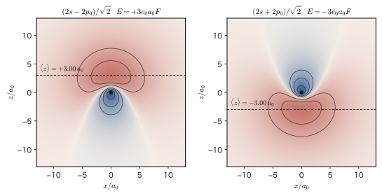

Chapter 28Degenerate Perturbation Theory — The Stark Effect and the Zeeman Effect
When an electric field is applied to a semiconductor crystal, the wavelength at which it begins to absorb light shifts slightly. When we look through a spectroscope at the light emitted by atoms near a strong magnet, a single emission line splits into three lines. Both are instances of the problem “by how much do the energy levels of atoms or molecules move when a weak field is applied from outside?”, and this is where the perturbation theory we learned in the previous chapter (Chapter 27) comes into play. However, if we try to use the formulas of the previous chapter as they are, they break down at the crucial point. This is because the $n=2$ level of the hydrogen atom contains four states, 2s, 2p$_0$, 2p$_{+1}$, and 2p$_{-1}$, all lying at the same energy, and the denominator $E_n^{(0)}-E_k^{(0)}$ of the second-order perturbation formula of the previous chapter therefore becomes $0$. The existence of several states with the same energy—degeneracy—is, in quantum mechanics, rather the ordinary situation. Examples include the $2l+1$-fold degeneracy in $m$ of a spherically symmetric atom, the twofold degeneracy of the electron spin, and the degeneracy of the d orbitals in a crystal field; in most of the situations that determine the properties of materials, there is degeneracy.
The answer of this chapter is surprisingly simple. Because degenerate states “have the same energy,” in the absence of a perturbation any superposition of them is an eigenstate with that same energy. When a perturbation is added, only special superpositions among them are selected as stable states, and those superpositions do not change even as the strength of the perturbation is made to approach $0$. What determines them is the task of diagonalizing (AD 02, Chapter 12, Section 12.3) a small matrix $W$ extracted so as to contain only the elements between the degenerate states. The size of the matrix is the degeneracy $g$ (4 for $n=2$ of hydrogen, and smaller in most cases), and it does not depend on the strength of the perturbation. This task has the same structure as the coupled oscillations of classical physics (when two pendulums of the same frequency are connected by a spring, they separate into two normal modes—in phase and out of phase—and their frequencies change slightly). A weak coupling determines which superpositions become the eigenmodes.
In this chapter, we first confirm, using a two-level model and looking at numerical values, why the formulas of Chapter 27 break down for degenerate levels (Section 28.1). Next we formulate first-order perturbation of a degenerate level in general (Section 28.2). Then, using the exact solution of the simplest two-level system, we understand how degenerate and nondegenerate perturbation theory are connected in a single formula, as well as level repulsion and the origin of molecular orbitals and band gaps (Section 28.3). After that, we calculate for the hydrogen atom the effects of the two external fields most closely related to materials—the Stark effect due to an electric field (Section 28.4) and the Zeeman effect due to a magnetic field (Section 28.5)—and connect them to shallow donors in silicon and gallium arsenide, electron spin resonance (ESR), and the NV center in diamond. Finally, we see how degeneracy is lifted as the symmetry of the perturbation is lowered, as a preview of ligand fields (Chapters 43 and 44), the Jahn–Teller effect, and the band edges of solids (k·p perturbation theory) (Section 28.6).
- That applying the second-order perturbation formula of Chapter 27 to degenerate levels makes the denominator $0$ and the formula breaks down, and that even for quasi-degenerate levels the radius of convergence $\Delta/2\abs{V}$ of the series becomes small and the same difficulty arises (28.1)
- The formulation of degenerate perturbation theory: the zeroth-order state $\sum_a a_a\varphi_a$, the secular equation $\det(W-E^{(1)})=0$, $W_{ab}=\mel{\varphi_a}{\hat{V}}{\varphi_b}$, “good” states, the diagonalization of $W$ by symmetry, and the fact that a degeneracy that is not lifted at first order is lifted at second order (28.2)
- The exact solution of the two-level system $E_\pm=\tfrac12(E_1+E_2)\pm\sqrt{\Delta^2/4+\abs{V}^2}$, the mixing angle $\tan2\theta=2\abs{V}/\Delta$, level repulsion and avoided crossing, the inversion of NH$_3$, molecular orbitals, and the band gap $E_{\mathrm g}=2\abs{U_G}$ of nearly free electrons (28.3)
- The Stark effect: $\hat{V}=e_0F\hat{z}$ ($=-\hat{\bm{d}}\cdot\bm{E}$), parity and selection rules, the absence of a first-order effect for 1s, the $4\times4$ matrix for $n=2$ and its eigenvalues $\pm3e_0a_0F$, $0$, $0$, the result $\tfrac32n(n_1-n_2)e_0a_0F$ for general $n$, and the shallow donor in GaAs (28.4)
- The Zeeman effect: $\hat{H}_{\mathrm Z}=(\mu_{\mathrm B}/\hbar)B(\hat{L}_z+g_{\mathrm e}\hat{S}_z)$, the normal Zeeman effect, the anomalous Zeeman effect, Landé's $g_J$ and the Paschen–Back effect (only the results are stated; for details see Chapter 26), and ESR and the NV center (28.5)
- The splitting of the fivefold degeneracy of the d orbitals in a cubic field ($e_g$: $+6Dq$, $t_{2g}$: $-4Dq$), the Jahn–Teller effect $E_{\mathrm{JT}}=-V_{\mathrm{JT}}^2/2K$, and the relation between degeneracy and symmetry (28.6)
Source notes: This chapter supplements material that is not in the original notes. Related notes: Yasuhide Mochizuki, “Physics Notes: Quantum Mechanics 3,” pp. 20–25 (nondegenerate perturbation theory).
28.1 What Goes Wrong with Degeneracy — The Denominator Becomes Zero
28.1.1 What is degeneracy?
In Chapter 27, assuming that the eigenvalue problem $\hat{H}_0\psi_n^{(0)}=E_n^{(0)}\psi_n^{(0)}$ of the Hamiltonian $\hat{H}_0$ before the perturbation is added had been solved, we expanded the eigenvalues and eigenstates of the Hamiltonian $\hat{H}=\hat{H}_0+\lambda\hat{V}$, obtained by adding a weak perturbation $\lambda\hat{V}$, in powers of $\lambda$. In doing so we tacitly assumed that the eigenvalues of $\hat{H}_0$ are all different, that is, that exactly one state corresponds to each energy. Degeneracy is what happens when this assumption fails.
Definition 28.1: Degeneracy
When a single eigenvalue $E^{(0)}$ of the Hamiltonian $\hat{H}_0$ has $g$ mutually linearly independent eigenstates ($g\ge2$), the level $E^{(0)}$ is said to be $g$-fold degenerate (that is, $g$ states share this energy), and $g$ is called the degeneracy. We choose the $g$ states with the same energy to be mutually orthogonal, normalized states $\varphi_1,\varphi_2,\dots,\varphi_g$:
\begin{equation} \hat{H}_0\varphi_a=E^{(0)}\varphi_a,\qquad \braket{\varphi_a}{\varphi_b}=\delta_{ab}\qquad(a,b=1,\dots,g) \label{eq:28-deg} \end{equation}For a degenerate level, any linear combination $\varphi=\sum_a c_a\varphi_a$ of $\varphi_1,\dots,\varphi_g$ is also an eigenstate with the same eigenvalue $E^{(0)}$ ($\hat{H}_0\varphi=\sum_ac_a\hat{H}_0\varphi_a=E^{(0)}\varphi$). In other words, the eigenstates of a degenerate level form a $g$-dimensional vector space (the degenerate subspace), and which basis to choose within it is not determined by $\hat{H}_0$ alone. This is the starting point of the story of this chapter. Degeneracy appears everywhere in materials science (Table 28.1).
| System | Degenerate states | Degeneracy $g$ | Cause of the degeneracy |
|---|---|---|---|
| Hydrogen atom (ignoring spin) | $n=2$: 2s, 2p$_0$, 2p$_{+1}$, 2p$_{-1}$ | $n^2$ (4 for $n=2$) | Spherical symmetry (the degeneracy in $m$) and a degeneracy peculiar to the Coulomb force (the degeneracy in $l$, Section 15.6) |
| Atom in a spherically symmetric potential | States with the same $n,l$ and with $m=-l,\dots,l$ | $2l+1$ | Spherical symmetry (in space without a magnetic field, no direction is distinguished) |
| Electron spin (in the absence of a magnetic field) | $\uparrow$, $\downarrow$ ($\alpha,\beta$) | 2 | No direction is distinguished |
| Two-dimensional square well | $\psi_{12}$, $\psi_{21}$ ($E=5\pi^2\hbar^2/2mL^2$) | 2 | Symmetry under interchange of $x$ and $y$ |
| d electron in a crystal field of cubic symmetry | $e_g$: $d_{z^2}$, $d_{x^2-y^2}$ / $t_{2g}$: $d_{xy}$, $d_{yz}$, $d_{zx}$ | 2, 3 | Cubic symmetry (Chapter 44) |
| Molecule made of two equivalent atoms | $\phi_{\mathrm A}$, $\phi_{\mathrm B}$ (the 1s orbital of each atom) | 2 | Symmetry under interchange of the two atoms (Section 28.3) |
Let us add some detail on the example of the two-dimensional square well (row 4 of Table 28.1). The eigenstates of a square infinite well of width $L$ (Chapter 10) are $\psi_{nm}(x,y)=\varphi_n(x)\varphi_m(y)$, $\varphi_n(x)=\sqrt{2/L}\,\sin(n\pi x/L)$ ($n,m=1,2,\dots$), and the energy is $E_{nm}=\dfrac{\pi^2\hbar^2}{2mL^2}(n^2+m^2)$. The pairs $(n,m)=(1,2)$ and $(2,1)$ have $n^2+m^2=5$ and hence the same energy, so $\psi_{12}=\varphi_1(x)\varphi_2(y)$ and $\psi_{21}=\varphi_2(x)\varphi_1(y)$ are twofold degenerate. These two states go into each other when $x$ and $y$ are interchanged. The symmetry of the square produces this degeneracy. If we change to a rectangular well, the degeneracy disappears.
28.1.2 The formulas of Chapter 27 cannot be used for degenerate levels
The first- and second-order corrections to the $n$th nondegenerate state derived in Chapter 27 were written, in terms of the matrix element $V_{kn}=\mel{\psi_k^{(0)}}{\hat{V}}{\psi_n^{(0)}}$, as
\begin{equation} E_n^{(1)}=V_{nn},\qquad E_n^{(2)}=\sum_{k\ne n}\frac{\abs{V_{kn}}^2}{E_n^{(0)}-E_k^{(0)}},\qquad \psi_n^{(1)}=\sum_{k\ne n}\frac{V_{kn}}{E_n^{(0)}-E_k^{(0)}}\,\psi_k^{(0)} \label{eq:28-pt} \end{equation}(the correction to the wave function is the one taken with intermediate normalization $\braket{\psi_n^{(0)}}{\psi_n^{(1)}}=0$). Every one of these formulas has the energy difference $E_n^{(0)}-E_k^{(0)}$ in the denominator on the right-hand side. However, if there is another state $k$ that is degenerate with the $n$th state ($E_k^{(0)}=E_n^{(0)}$), the corresponding term of the sum becomes $\abs{V_{kn}}^2/0$. If $V_{kn}\ne0$, the term is infinite, and Eq. \eqref{eq:28-pt} has no meaning at all. If $V_{kn}=0$, we get the indeterminate form $0/0$ (we will see in Section 28.2 that the latter is in fact a special case in which the formulas can be used even when there is degeneracy).
The same difficulty arises when the denominator is close to $0$, that is, when there are two states whose energies are very close even though they are not degenerate (quasi-degenerate states). Let us confirm this numerically.
Example 28.1: The second-order perturbation formula of Chapter 27 cannot be used for degenerate levels
There are two states $\varphi_1$, $\varphi_2$ with energies $E_1=0$ and $E_2=\Delta$, and the perturbation has only the off-diagonal element $V=\mel{\varphi_1}{\hat{V}}{\varphi_2}=\mel{\varphi_2}{\hat{V}}{\varphi_1}=0.020\ \mathrm{eV}$ (the diagonal elements are $0$). For each of $\Delta=0.1,\ 0.01,\ 0.001,\ 0\ \mathrm{eV}$, compare the exact solution for the lower level $E_-$ with the second-order perturbation formula of Chapter 27 ($E^{(2)}$ in Eq. \eqref{eq:28-pt}).
Solution. In the basis $\{\varphi_1,\varphi_2\}$ the Hamiltonian is $H=\begin{pmatrix}0&V\\V&\Delta\end{pmatrix}$. The eigenvalues are the two solutions of the secular equation (characteristic equation)
$$ \det(H-E)=\begin{vmatrix}-E&V\\V&\Delta-E\end{vmatrix}=(-E)(\Delta-E)-V^2=E^2-\Delta E-V^2=0 $$By the quadratic formula,
$$ E_\pm=\frac{\Delta\pm\sqrt{\Delta^2+4V^2}}{2}=\frac{\Delta}{2}\pm\sqrt{\frac{\Delta^2}{4}+V^2} $$(the solution for a general two-level system is examined in detail in Section 28.3). The lower level is $E_-=\dfrac{\Delta}{2}-\sqrt{\dfrac{\Delta^2}{4}+V^2}$, and substituting $V=0.020\ \mathrm{eV}$ and $V^2=4.0\times10^{-4}\ \mathrm{eV^2}$ gives
- $\Delta=0.1\ \mathrm{eV}$: since $\sqrt{0.0025+0.0004}=\sqrt{0.0029}=0.053852$, $E_-=0.05-0.053852=-0.003852\ \mathrm{eV}=-3.85\ \mathrm{meV}$.
- $\Delta=0.01\ \mathrm{eV}$: since $\sqrt{2.5\times10^{-5}+4\times10^{-4}}=\sqrt{4.25\times10^{-4}}=0.020616$, $E_-=0.005-0.020616=-0.015616\ \mathrm{eV}=-15.6\ \mathrm{meV}$.
- $\Delta=0.001\ \mathrm{eV}$: since $\sqrt{2.5\times10^{-7}+4\times10^{-4}}=0.020006$, $E_-=0.0005-0.020006=-0.019506\ \mathrm{eV}=-19.5\ \mathrm{meV}$.
- $\Delta=0$: $E_\pm=\pm V=\pm20\ \mathrm{meV}$, $E_-=-20\ \mathrm{meV}$.
On the other hand, the second-order perturbation formula of Chapter 27 gives, for the state $\varphi_1$ ($E_1=0$), $E^{(2)}=\dfrac{V^2}{E_1-E_2}=-\dfrac{V^2}{\Delta}$, so from $-\dfrac{4\times10^{-4}}{\Delta}$ we obtain $-4,\ -40,\ -400\ \mathrm{meV}$ for $\Delta=0.1,\ 0.01,\ 0.001\ \mathrm{eV}$, respectively, while for $\Delta=0$ the denominator is $0$ and the formula cannot be used. The results are summarized in Table 28.2.
| $\Delta$ [eV] | Exact $E_-$ [meV] | Exact $E_+$ [meV] | Second-order perturbation $-V^2/\Delta$ [meV] | Radius of convergence of the series $\Delta/2V$ |
|---|---|---|---|---|
| 0.1 | $-3.85$ | $103.85$ | $-4.0$ | 2.5 |
| 0.01 | $-15.6$ | $25.6$ | $-40$ | 0.25 |
| 0.001 | $-19.5$ | $20.5$ | $-400$ | 0.025 |
| 0 | $-20.0$ | $+20.0$ | (the denominator is $0$) | 0 |
For $\Delta=0.1\ \mathrm{eV}$, the second-order perturbation result of $-4.0\ \mathrm{meV}$ agrees with the exact solution of $-3.85\ \mathrm{meV}$ to within an error of a few percent. As $\Delta$ is made smaller, however, the exact solution settles at $-20\ \mathrm{meV}$ ($=-V$), whereas the second-order perturbation formula keeps growing to $-40$, $-400\ \mathrm{meV}$ and diverges as $\Delta\to0$ (Figure 28.1). The last column is the radius of convergence $\lambda_c=\Delta/2V$ of the perturbation series of the two-level model studied in Chapter 27 (the power series in $\lambda$ obtained when $V$ is replaced by $\lambda V$). The series diverges unless $\lambda=1$ lies within the radius of convergence, so for $\Delta=0.01\ \mathrm{eV}$ or smaller, even if we calculate up to second or third order, the series does not approach the correct answer however many terms we add. Even for quasi-degenerate states, effectively the same treatment as for degeneracy is necessary.
![Comparison of the energy of the lower level of a two-level system with the second-order perturbation formula. The horizontal axis is the level spacing Δ (0 to 110 meV), and the vertical axis is the energy E− (meV) of the lower level. The off-diagonal element is 20 meV. The solid brown line is the exact solution, which approaches −20 meV as Δ becomes small. The dashed red line is the second-order perturbation formula −V²/Δ, which diverges to negative infinity as Δ becomes small. The blue squares are the points Δ=1, 10, and 100 meV.](figs/ch28_fig28-1.svg)
Related simulator: Perturbation Theory and He (in tab ②, “Two-level model,” you can confirm that as $\Delta$ is made smaller the convergence of the perturbation series worsens, and that at $\Delta=0$ the series can no longer be used. The simulator's $\hat{H}^{(0)}$ and $\hat{H}'$ correspond to this book's $\hat{H}_0$ and $\hat{V}$. Chapter 27).
28.1.3 A new question: Which are the “correct zeroth-order states”?
Let us now look a little further at the case $\Delta=0$ of Example 28.1. The eigenvalues of $H=\begin{pmatrix}0&V\\V&0\end{pmatrix}$ are $E=\pm V$, and for $V\gt0$ the eigenvectors are
$$ E=-V:\ \frac{1}{\sqrt2}\begin{pmatrix}1\\-1\end{pmatrix}=\frac{\varphi_1-\varphi_2}{\sqrt2},\qquad E=+V:\ \frac{1}{\sqrt2}\begin{pmatrix}1\\1\end{pmatrix}=\frac{\varphi_1+\varphi_2}{\sqrt2} $$What we want you to notice is that these eigenvectors do not depend on the magnitude of $V$ (they are the same for $V=20\ \mathrm{meV}$ and for $V=0.001\ \mathrm{meV}$). In the limit $V\to0$, the exact eigenstates do not return to the $\varphi_1$, $\varphi_2$ that we prepared at the start, but converge to $(\varphi_1\pm\varphi_2)/\sqrt2$.
Question: Which superposition of the degenerate states does the perturbation “select”?
$\hat{H}_0$ does not distinguish among the bases of the degenerate subspace. Whether we choose $\varphi_1,\varphi_2$ or $(\varphi_1\pm\varphi_2)/\sqrt2$, for $\hat{H}_0$ each is the same collection of eigenstates. In contrast, when a perturbation $\lambda\hat{V}$ is added, however weak, the degeneracy is lifted (at least partially), and only certain special superpositions can remain as stationary states with different energies. Moreover, the states to which the exact eigenstates converge in the limit $\lambda\to0$ are also these special superpositions. Therefore, for a perturbation theory with degeneracy we must determine from the perturbation $\hat{V}$ itself which states are the right ones to start from in the limit where the perturbation is returned to $0$—the correct zeroth-order states (or “good” states). What determines them is the secular equation of Section 28.2.
The same is true of coupled oscillations in classical mechanics. When two pendulums with the same frequency $\omega_0$ are connected by a weak spring, the energy goes back and forth between the two pendulums when only one of them is set swinging (beats; AD 03, Chapter 17, Section 17.4), and even if the spring is made weak, the state in which “only one swings” does not become stationary. The stationary motions (normal modes) are the state in which the two swing in phase and the state in which they swing out of phase, and these are superpositions that do not depend on the strength of the spring. The amount by which the frequencies of the normal modes are shifted slightly up and down from $\omega_0$ is determined by the strength of the spring (the coupling). Degenerate perturbation theory in quantum mechanics has the same structure (Related simulator: Matrix Diagonalization and Measurement; in tab ③, “Coupled oscillations,” you can confirm the diagonalization that separates the motion into normal modes).
Example 28.2: A two-dimensional square well—why we must not take only $\psi_{12}$
For a two-dimensional square infinite well of width $L$, add to the degenerate first excited states $\psi_{12}=\varphi_1(x)\varphi_2(y)$ and $\psi_{21}=\varphi_2(x)\varphi_1(y)$ (a) the perturbation $\hat{V}_a=V_0\,x/L$ and (b) the perturbation $\hat{V}_b=V_0\,xy/L^2$ ($V_0$ is a small constant with the dimension of energy). In each case, describe qualitatively what happens if we regard only $\psi_{12}$ as the “zeroth-order state” and use the first- and second-order formulas of Chapter 27.
Solution. We examine the matrix element $\mel{\psi_{21}}{\hat{V}}{\psi_{12}}$ of the perturbation.
(a) Since $\hat{V}_a$ is a function of $x$ only, $\mel{\psi_{21}}{x}{\psi_{12}}=\braket{\varphi_2}{x\,\varphi_1}\braket{\varphi_1}{\varphi_2}$, and because the integral in the $y$ direction is $\braket{\varphi_1}{\varphi_2}=0$ (orthogonality), the matrix element is $0$. That is, $\hat{V}_a$ does not mix $\psi_{12}$ and $\psi_{21}$. In this case $\psi_{12}$ and $\psi_{21}$ are “good states” from the start, and the numerator $\abs{V_{kn}}^2$ of the term whose denominator becomes $0$ in the formula of Chapter 27 is also $0$ (it is an indeterminate form $0/0$, but since the states do not actually mix, we may regard it as $0$).
(b) $\hat{V}_b=V_0\,xy/L^2$ is a product of a function of $x$ and a function of $y$, and $\mel{\psi_{21}}{xy}{\psi_{12}}=\braket{\varphi_2}{x\,\varphi_1}\braket{\varphi_1}{y\,\varphi_2}\ne0$. The integral $\braket{\varphi_2}{x\,\varphi_1}$ is not 0 (we find its value in Section 28.2). Therefore $\hat{V}_b$ directly connects the two states $\psi_{12}$ and $\psi_{21}$, whose energy difference is $0$: in the formula of Chapter 27, the numerator $\abs{V_{21,12}}^2\ne0$ is divided by the denominator $E_{12}^{(0)}-E_{21}^{(0)}=0$, and the second-order perturbation diverges. Physically, “we can move between the two states, $\psi_{12}\leftrightarrow\psi_{21}$, without paying any energy,” so no matter how weak the perturbation is, $\psi_{12}$ and $\psi_{21}$ mix to an extent of order 1, and it is not correct to take only one of them. The correct zeroth-order states are the symmetric and antisymmetric combinations of $\psi_{12}$ and $\psi_{21}$, as shown in the next section.
In the end, “which superposition is a good state” is determined not by $\hat{H}_0$ but by the perturbation $\hat{V}$. Even for the same degenerate level, there are perturbations for which $\{\psi_{12},\psi_{21}\}$ are “good” states, as in (a), and perturbations for which they are not, as in (b).
28.2 Degenerate Perturbation Theory — Diagonalization in the Degenerate Subspace
28.2.1 Setup—the zeroth-order state is a superposition within the degenerate subspace
As we saw in Section 28.1, for a perturbation of a degenerate level we must determine from the equations which superposition within the degenerate subspace the zeroth-order state is. As in Chapter 27, consider $\hat{H}=\hat{H}_0+\lambda\hat{V}$ and increase $\lambda$ gradually from $0$. Let $E^{(0)}$ be the one level of $\hat{H}_0$ that we are considering ($g$-fold degenerate, with eigenstates $\varphi_1,\dots,\varphi_g$; Eq. \eqref{eq:28-deg}), and denote the eigenstates of the other levels by $\psi_k^{(0)}$ (with energy $E_k^{(0)}\ne E^{(0)}$). Together, $\{\varphi_a\}$ and $\{\psi_k^{(0)}\}$ form a complete orthonormal set of eigenstates of $\hat{H}_0$.
Derivation: First-order perturbation of a degenerate level
[i] Expansion. We expand the eigenstate and the energy connected through $\lambda$ in power series in $\lambda$, just as in Chapter 27:
$$ \psi=\psi^{(0)}+\lambda\psi^{(1)}+\lambda^2\psi^{(2)}+\cdots,\qquad E=E^{(0)}+\lambda E^{(1)}+\lambda^2E^{(2)}+\cdots $$Substitute this into the Schrödinger equation $(\hat{H}_0+\lambda\hat{V})\psi=E\psi$ and collect the terms by powers of $\lambda$. The $\lambda^0$ and $\lambda^1$ terms are
\begin{align} &\lambda^0:\quad \hat{H}_0\psi^{(0)}=E^{(0)}\psi^{(0)}, \label{eq:28-ord0}\\ &\lambda^1:\quad \hat{H}_0\psi^{(1)}+\hat{V}\psi^{(0)}=E^{(0)}\psi^{(1)}+E^{(1)}\psi^{(0)} \ \Longleftrightarrow\ (\hat{H}_0-E^{(0)})\,\psi^{(1)}=(E^{(1)}-\hat{V})\,\psi^{(0)} \label{eq:28-ord1} \end{align}[ii] Zeroth order. Eq. \eqref{eq:28-ord0} states that $\psi^{(0)}$ is an eigenstate of $\hat{H}_0$ with eigenvalue $E^{(0)}$. Therefore $\psi^{(0)}$ lies in the degenerate subspace, and can be written as
\begin{equation} \psi^{(0)}=\sum_{a=1}^{g}a_a\,\varphi_a,\qquad \sum_a\abs{a_a}^2=1 \label{eq:28-zeroth} \end{equation}(in the nondegenerate case of Chapter 27, $g=1$ and the coefficient was fixed to $1$). Here, the coefficients $a_a$ are not yet determined. It is the first-order equation that determines them.
[iii] Project the first-order equation onto the degenerate subspace. Multiply both sides of Eq. \eqref{eq:28-ord1} from the left by $\bra{\varphi_b}$. Since $\hat{H}_0$ is Hermitian and $(\hat{H}_0-E^{(0)})\varphi_b=0$, the left-hand side becomes
$$ \mel{\varphi_b}{\hat{H}_0-E^{(0)}}{\psi^{(1)}}=\braket{(\hat{H}_0-E^{(0)})\varphi_b}{\psi^{(1)}}=0 $$and the unknown $\psi^{(1)}$ drops out. The right-hand side is $\bra{\varphi_b}(E^{(1)}-\hat{V})\ket{\psi^{(0)}}=E^{(1)}a_b-\sum_a\mel{\varphi_b}{\hat{V}}{\varphi_a}\,a_a$ (we used Eq. \eqref{eq:28-zeroth} and $\braket{\varphi_b}{\varphi_a}=\delta_{ba}$). Hence
\begin{equation} \sum_{a=1}^{g}\bigl(W_{ba}-E^{(1)}\delta_{ba}\bigr)a_a=0\qquad(b=1,\dots,g),\qquad W_{ba}\equiv\mel{\varphi_b}{\hat{V}}{\varphi_a} \label{eq:28-secular-lin} \end{equation}holds.
∎
Eq. \eqref{eq:28-secular-lin} is a system of homogeneous linear equations in the $g$ unknowns $a_1,\dots,a_g$. The condition for a nontrivial solution ($a\ne0$) to exist is that the determinant of the coefficient matrix be $0$ (AD 02, Chapter 12, Section 12.1). The $W_{ab}$ appearing here is the $g\times g$ matrix obtained by restricting the matrix elements $V_{mn}$ of Chapter 27 to the $g$ states of the degenerate subspace (we write $W$ to distinguish this small matrix inside the degenerate subspace from $V_{mn}$). Also, $\mathbb{1}$ denotes the $g\times g$ identity matrix (diagonal elements $1$, all others $0$). We have now obtained the following conclusion.
Theorem 28.1: First-order perturbation of a degenerate level (degenerate perturbation theory)
When a perturbation $\lambda\hat{V}$ is applied to a $g$-fold degenerate level $E^{(0)}$, the first-order energy correction $E^{(1)}$ is an eigenvalue of the matrix of the perturbation within the degenerate subspace
\begin{equation} W_{ab}=\mel{\varphi_a}{\hat{V}}{\varphi_b}=\int\varphi_a^*\,\hat{V}\,\varphi_b\,\dd\tau\qquad(a,b=1,\dots,g) \label{eq:28-W} \end{equation}(a $g\times g$ Hermitian matrix). That is, the secular equation
\begin{equation} \det\bigl(W-E^{(1)}\,\mathbb{1}\bigr)=\begin{vmatrix} W_{11}-E^{(1)}&W_{12}&\cdots&W_{1g}\\ W_{21}&W_{22}-E^{(1)}&\cdots&W_{2g}\\ \vdots&\vdots&\ddots&\vdots\\ W_{g1}&W_{g2}&\cdots&W_{gg}-E^{(1)} \end{vmatrix}=0 \label{eq:28-secular} \end{equation}has $g$ roots $E_1^{(1)},\dots,E_g^{(1)}$ (multiple roots counted), and these are the first-order corrections of the $g$ levels. Moreover, the eigenvector $(a_1,\dots,a_g)^{\mathsf T}$ belonging to each root gives the correct zeroth-order states $\eta_i=\sum_aa_a^{(i)}\varphi_a$ (“good” states).
Since $W$ is a Hermitian matrix, all the eigenvalues $E_i^{(1)}$ are real, and eigenvectors belonging to different eigenvalues are mutually orthogonal (AD 02, Chapter 12). Even when there are multiple roots, the eigenvectors can be chosen to be mutually orthogonal. For $g=1$, $W$ is the $1\times1$ matrix $W_{11}=\mel{\varphi_1}{\hat{V}}{\varphi_1}$, and Eq. \eqref{eq:28-secular} becomes $E^{(1)}=\mel{\varphi_1}{\hat{V}}{\varphi_1}$, which reproduces the nondegenerate first-order perturbation $E_n^{(1)}=V_{nn}$ of Chapter 27. The nondegenerate formula is a special case of degenerate perturbation theory (a $1\times1$ matrix).
Math Tool: The secular equation as an eigenvalue problem
Eq. \eqref{eq:28-secular-lin} is precisely the eigenvalue problem $W\bm{a}=E^{(1)}\bm{a}$ of the matrix $W$. How to find the eigenvalues and eigenvectors of a matrix, and the diagonalization of a matrix, were treated in AD 02, Chapter 12, Section 12.1 (definition and the secular equation) and Section 12.3 (diagonalization). In quantum mechanics, “finding a basis that diagonalizes $\hat{V}$ within the degenerate subspace” is the content of degenerate perturbation theory. The size of the matrix is $g\times g$, and it does not contain the perturbation strength $\lambda$. Related simulator: Matrix Diagonalization and Measurement (you can verify visually that the basis in which the off-diagonal elements vanish consists of eigenstates).
28.2.2 What is a “good state”?
The eigenvectors $\eta_i$ of Theorem 28.1 form a basis in which $\hat{V}$ is diagonal within the degenerate subspace:
\begin{equation} \mel{\eta_i}{\hat{V}}{\eta_j}=E_i^{(1)}\,\delta_{ij} \label{eq:28-diag} \end{equation}Indeed, letting $\eta_i=\sum_aa_a^{(i)}\varphi_a$, we have $\mel{\eta_i}{\hat{V}}{\eta_j}=\sum_{ab}a_a^{(i)*}W_{ab}a_b^{(j)}=E_j^{(1)}\sum_aa_a^{(i)*}a_a^{(j)}=E_j^{(1)}\delta_{ij}$. Therefore, if we choose $\{\eta_i\}$ as the basis of the degenerate level, “all matrix elements of $\hat{V}$ connecting degenerate states are $0$.” This is the meaning of “good states.” For such a basis, the terms whose denominators become $0$ in the formula of Chapter 27 (the terms of the degenerate partner state $k$ in Eq. \eqref{eq:28-pt}) also have numerators $\abs{V_{kn}}^2$ that become $0$, and so they do not appear. Degenerate perturbation theory may be regarded as a procedure that first looks for the states to which the nondegenerate formula can be applied.
Intuition: Various cases of $W$
(1) All the roots are distinct ($E_1^{(1)},\dots,E_g^{(1)}$ are all different): the degeneracy is completely lifted. The $g$-fold level splits into $g$ lines at first order.
(2) Some of the roots coincide: the degeneracy is lifted only partially. For example, a fourfold degenerate level splits into $2$ lines (nondegenerate) and one line (twofold) (the Stark effect of the hydrogen $n=2$ level in Section 28.4 splits into three lines, $+3e_0a_0F$, $-3e_0a_0F$, and $0$ (twofold)).
(3) $W$ is a constant multiple of the identity matrix ($W=w\mathbb{1}$): at first order the level is merely shifted as a whole, and the degeneracy is not lifted. A degeneracy that was not lifted at first order is lifted at second order (Section 28.2.4).
(4) $W=0$: there is no first-order correction.
As an important supplement, of the first-order wave-function correction $\psi^{(1)}$, the components along the states $\psi_k^{(0)}$ ($E_k^{(0)}\ne E^{(0)}$) outside the degenerate subspace are determined in the same form as in the nondegenerate case:
\begin{equation} \psi_i^{(1)}\ni\sum_{k\notin\mathrm{D}}\frac{\mel{\psi_k^{(0)}}{\hat{V}}{\eta_i}}{E^{(0)}-E_k^{(0)}}\,\psi_k^{(0)} \label{eq:28-psi1} \end{equation}($\mathrm{D}$ is the degenerate subspace; terms whose denominator is $0$ are not included). The components inside the degenerate subspace are determined not by the first-order equation but by the second-order equation.
28.2.3 Using symmetry, $W$ becomes diagonal
A $g\times g$ secular equation looks daunting when $g$ is large, but if the perturbation has symmetry, the matrix is already nearly diagonal from the start.
Theorem 28.2: Diagonalization of $W$ by symmetry
Suppose that a Hermitian operator $\hat{O}$ (for example $\hat{L}_z$, parity, or the interchange of two coordinates) commutes with both $\hat{H}_0$ and $\hat{V}$: $\comm{\hat{O}}{\hat{H}_0}=\comm{\hat{O}}{\hat{V}}=0$. Then the basis of the degenerate subspace can be chosen to consist of eigenstates of $\hat{O}$, $\hat{O}\varphi_a=o_a\varphi_a$, and
\begin{equation} W_{ab}=0\qquad(o_a\ne o_b) \label{eq:28-selection} \end{equation}holds. That is, $W$ splits into blocks according to the eigenvalues of $\hat{O}$ (it is block diagonal). If the eigenvalues of $\hat{O}$ are all different, $W$ is diagonal from the start, and the $\varphi_a$ themselves are “good” states.
Proof
Since $\hat{O}$ commutes with $\hat{H}_0$, for a state $\varphi$ in the degenerate subspace we have $\hat{H}_0(\hat{O}\varphi)=\hat{O}\hat{H}_0\varphi=E^{(0)}\hat{O}\varphi$, so $\hat{O}\varphi$ is also a state in the degenerate subspace. That is, $\hat{O}$ maps the degenerate subspace into itself, so we can take a basis that diagonalizes $\hat{O}$ within the degenerate subspace (eigenstates of $\hat{O}$). Next we compute $0=\mel{\varphi_a}{\comm{\hat{O}}{\hat{V}}}{\varphi_b}=\mel{\varphi_a}{\hat{O}\hat{V}-\hat{V}\hat{O}}{\varphi_b}$. Since $\hat{O}$ is Hermitian, $\bra{\varphi_a}\hat{O}=o_a\bra{\varphi_a}$ ($o_a$ is real), and therefore
$$ 0=o_a\mel{\varphi_a}{\hat{V}}{\varphi_b}-o_b\mel{\varphi_a}{\hat{V}}{\varphi_b}=(o_a-o_b)\,W_{ab} $$holds. If $o_a\ne o_b$, then $W_{ab}=0$.
∎
Theorem 28.2 is a selection rule that gives, from symmetry, the reason why a matrix element is $0$. There are two typical ways to use it.
- When $\hat{L}_z$ is conserved: A perturbation that is invariant under rotation about the $z$ axis (an electric or magnetic field in the $z$ direction) commutes with $\hat{L}_z$, so $W_{ab}$ takes values other than $0$ only between states with equal magnetic quantum numbers ($m_a=m_b$). We use this for the Stark effect in Section 28.4 and the Zeeman effect in Section 28.5.
- Parity: $\hat{P}\ket{\psi(\bm{r})}=\ket{\psi(-\bm{r})}$. The states of an atom have parity $(-1)^l$. A perturbation of even parity ($\hat{P}\hat{V}\hat{P}^{-1}=\hat{V}$) has matrix elements only between states of the same parity. For a perturbation of odd parity (such as an electric field, $\hat{V}\propto z$), the matrix elements between states of the same parity are $0$, and only those between states of different parity are not $0$ (Section 28.4).
Example 28.3: Degenerate perturbation of a two-dimensional square well, $\hat{V}=V_0xy/L^2$
To the twofold degenerate level $\psi_{12},\psi_{21}$ ($E^{(0)}=5\pi^2\hbar^2/2mL^2$) of Section 28.1, add the perturbation $\hat{V}=V_0\,xy/L^2$. Find the first-order energy corrections and the correct zeroth-order states. Also compare them with the first-order correction of the nondegenerate state $\psi_{11}$.
Solution. First we find the one-dimensional matrix element $x_{nm}\equiv\braket{\varphi_n}{x\,\varphi_m}=\dfrac{2}{L}\displaystyle\int_0^Lx\sin\frac{n\pi x}{L}\sin\frac{m\pi x}{L}\dd x$. Letting $u=\pi x/L$, we have $x_{nm}=\dfrac{2L}{\pi^2}\displaystyle\int_0^\pi u\sin nu\,\sin mu\dd u$.
(i) $n=m$: Since $\sin^2nu=\dfrac{1-\cos2nu}{2}$, we have $\displaystyle\int_0^\pi u\sin^2nu\dd u=\dfrac{\pi^2}{4}-\dfrac12\int_0^\pi u\cos2nu\dd u=\dfrac{\pi^2}{4}$ (here $\int_0^\pi u\cos ku\dd u=\bigl[\tfrac{u\sin ku}{k}\bigr]_0^\pi+\bigl[\tfrac{\cos ku}{k^2}\bigr]_0^\pi=\dfrac{(-1)^k-1}{k^2}$, and since $k=2n$ is even, this is $0$). Hence $x_{nn}=\dfrac{2L}{\pi^2}\cdot\dfrac{\pi^2}{4}=\dfrac L2$ (the center of the well—a natural value, since $\varphi_n$ is symmetric or antisymmetric about $x=L/2$).
(ii) $n=1$, $m=2$: By the product-to-sum formula $\sin u\sin2u=\tfrac12(\cos u-\cos3u)$ and the result above, $\int_0^\pi u\cos ku\dd u=\dfrac{(-1)^k-1}{k^2}$, we obtain
$$ \int_0^\pi u\sin u\sin2u\dd u=\frac12\left(\frac{-2}{1}-\frac{-2}{9}\right)=\frac12\cdot\left(-\frac{16}{9}\right)=-\frac89,\qquad x_{12}=x_{21}=\frac{2L}{\pi^2}\left(-\frac89\right)=-\frac{16L}{9\pi^2} $$Since $\psi_{12}=\varphi_1(x)\varphi_2(y)$ and $\psi_{21}=\varphi_2(x)\varphi_1(y)$, the matrix elements of $\hat{V}=V_0\,xy/L^2$ are products of an $x$-direction element and a $y$-direction element, which gives
\begin{align} W_{11}&=\mel{\psi_{12}}{\hat{V}}{\psi_{12}}=\frac{V_0}{L^2}\,x_{11}\,y_{22}=\frac{V_0}{L^2}\cdot\frac L2\cdot\frac L2=\frac{V_0}{4},\qquad W_{22}=\frac{V_0}{L^2}\,x_{22}\,y_{11}=\frac{V_0}{4},\notag\\ W_{12}&=\mel{\psi_{12}}{\hat{V}}{\psi_{21}}=\frac{V_0}{L^2}\,x_{12}\,y_{21}=\frac{V_0}{L^2}\left(-\frac{16L}{9\pi^2}\right)^2=\frac{256}{81\pi^4}V_0\ (=0.03245\,V_0)=W_{21}\notag \end{align}Hence
$$ W=V_0\begin{pmatrix}\dfrac14&\dfrac{256}{81\pi^4}\\[2mm]\dfrac{256}{81\pi^4}&\dfrac14\end{pmatrix} $$From the secular equation $\det(W-E^{(1)})=(V_0/4-E^{(1)})^2-(256V_0/81\pi^4)^2=0$ we get $E^{(1)}=V_0\bigl(\tfrac14\pm\tfrac{256}{81\pi^4}\bigr)$, that is, $0.2824\,V_0$ and $0.2176\,V_0$. Since $W_{12}\gt0$, the eigenvector is $(a_1,a_2)=(1,1)/\sqrt2$ for $E^{(1)}=\bigl(\tfrac14+\tfrac{256}{81\pi^4}\bigr)V_0$ and $(1,-1)/\sqrt2$ for $E^{(1)}=\bigl(\tfrac14-\tfrac{256}{81\pi^4}\bigr)V_0$. In other words, the “good” states are
$$ \eta_\pm=\frac{\psi_{12}\pm\psi_{21}}{\sqrt2},\qquad E_\pm=\frac{5\pi^2\hbar^2}{2mL^2}+\left(\frac14\pm\frac{256}{81\pi^4}\right)V_0 $$where the state symmetric under the interchange $x\leftrightarrow y$ ($+$) is shifted upward and the antisymmetric state ($-$) is shifted downward. The first-order correction of the nondegenerate state $\psi_{11}$ is $\mel{\psi_{11}}{\hat{V}}{\psi_{11}}=V_0x_{11}y_{11}/L^2=V_0/4$. The average $\tfrac12(E_++E_-)$ of the shifts of the two degenerate states comes out exactly equal to this $V_0/4$ because the average of the diagonal elements of $W$ (half the trace) is $V_0/4$. The structure is that the perturbation shifts the levels by the same amount on average, and they split upward and downward by the amount of the symmetric/antisymmetric coupling $W_{12}$.
Example 28.4: Threefold degeneracy—a system of three equivalent atoms in a row
Three equivalent atoms 1, 2, 3 are arranged in a row, and each atom has a level of the same energy $\varepsilon_0$ (states $\varphi_1,\varphi_2,\varphi_3$). Let the matrix element of the perturbation between neighboring atoms be $b$ ($W_{12}=W_{23}=b$), let the element between the two end atoms be $W_{13}=0$, and let the diagonal elements be $W_{11}=W_{22}=W_{33}=a$ ($a,b$ are real). Find the three levels.
Solution. The secular equation, for $W=\begin{pmatrix}a&b&0\\b&a&b\\0&b&a\end{pmatrix}$, is
$$ \begin{vmatrix}a-E&b&0\\b&a-E&b\\0&b&a-E\end{vmatrix} =(a-E)\bigl[(a-E)^2-b^2\bigr]-b\bigl[b(a-E)-0\bigr]=(a-E)\bigl[(a-E)^2-2b^2\bigr]=0 $$(expanded along the first row). Hence we obtain the three roots $E^{(1)}=a$, $a\pm\sqrt2\,b$. The eigenvectors are $(1,\sqrt2,1)/2$ for $E=a+\sqrt2\,b$, $(1,0,-1)/\sqrt2$ for $E=a$, and $(1,-\sqrt2,1)/2$ for $E=a-\sqrt2\,b$ (each can be checked by substituting into $W\bm{v}=E\bm{v}$; for example, for $E=a$, $W(1,0,-1)^{\mathsf T}=(a,\ b-b,\ -a)^{\mathsf T}=a(1,0,-1)^{\mathsf T}$). The three levels are equally spaced about $a$ (spacing $\sqrt2\,b$), and the center of gravity (the average) stays at $a$. The number of sign changes (nodes) of the wave function is 0 for $(1,\sqrt2,1)$, 1 for $(1,0,-1)$, and 2 for $(1,-\sqrt2,1)$, and for $b\lt0$ they are arranged in order of increasing energy. This has the same structure as the result of Hückel theory (Chapter 40) for the $\pi$ orbitals of the allyl group ($\mathrm{CH_2\!-\!CH\!-\!CH_2}$), where the levels are $\alpha+\sqrt2\beta$, $\alpha$, $\alpha-\sqrt2\beta$ (there $a=\alpha$, $b=\beta\lt0$). Molecular orbitals come from perturbation theory applied to the degenerate levels formed by atomic orbitals.
28.2.4 A degeneracy not lifted at first order is lifted at second order
When $W$ has a root that remains degenerate (for example $W=w\mathbb{1}$), the first-order correction does not determine the “good” states in the subspace belonging to that root. In this case we use the second-order energy to lift the remaining degeneracy. The general treatment of this is the method of the effective Hamiltonian, which uses the projection operator $P=\sum_a\ket{\varphi_a}\bra{\varphi_a}$ onto the degenerate subspace $\mathrm{D}$ and the projection operator $Q=1-P$ onto the rest of the space.
Derivation: The effective Hamiltonian through second order
Split the solution $\psi$ of the eigenvalue equation $(\hat{H}_0+\lambda\hat{V})\psi=E\psi$ into $P\psi+Q\psi$, and make two equations by multiplying by $P$ and by $Q$ ($P\hat{H}_0=\hat{H}_0P=E^{(0)}P$, $P+Q=1$):
$$ (E-E^{(0)}-\lambda P\hat{V}P)\,P\psi=\lambda P\hat{V}Q\psi,\qquad (E-Q\hat{H}_0Q-\lambda Q\hat{V}Q)\,Q\psi=\lambda Q\hat{V}P\psi $$From the second equation, $Q\psi=\lambda(E-Q\hat{H}_0Q-\lambda Q\hat{V}Q)^{-1}Q\hat{V}P\psi$. To lowest order in $\lambda$ we may set $E\to E^{(0)}$ and $\lambda Q\hat{V}Q\to0$, so $Q\psi\simeq\lambda(E^{(0)}-\hat{H}_0)^{-1}Q\hat{V}P\psi$ (in the space of $Q$, $E^{(0)}-\hat{H}_0$ does not have $0$ as an eigenvalue, so the inverse exists). Substituting this into the first equation gives an equation for the degenerate space $P\psi$ alone:
\begin{equation} E\,P\psi=\hat{H}_{\mathrm{eff}}\,P\psi,\qquad \hat{H}_{\mathrm{eff}}=E^{(0)}+\lambda P\hat{V}P+\lambda^2\,P\hat{V}Q\,\frac{1}{E^{(0)}-\hat{H}_0}\,Q\hat{V}P+O(\lambda^3) \label{eq:28-Heff} \end{equation}This is the equation we obtain.
∎
The meaning of Eq. \eqref{eq:28-Heff} is as follows. As a $g\times g$ matrix within the degenerate space $\mathrm{D}$ ($g$-dimensional), $\hat{H}_{\mathrm{eff}}$ is the sum of the first-order term $\lambda W$ and the second-order term below:
\begin{equation} W^{(2)}_{ab}=\sum_{k\notin\mathrm{D}}\frac{\mel{\varphi_a}{\hat{V}}{\psi_k^{(0)}}\mel{\psi_k^{(0)}}{\hat{V}}{\varphi_b}}{E^{(0)}-E_k^{(0)}}\qquad(a,b\in\mathrm{D}) \label{eq:28-W2} \end{equation}The energies through second order are the eigenvalues of $\hat{H}_{\mathrm{eff}}$. The second-order term is the sum, over the states $\psi_k^{(0)}$ outside the degenerate space, of the process “$\hat{V}$ acts on $\varphi_b$ and takes it to $\psi_k^{(0)}$ (an intermediate state), and from there $\hat{V}$ brings it back to $\varphi_a$,” weighted by the energy denominator $E^{(0)}-E_k^{(0)}$ ($\ne0$). The nondegenerate second-order perturbation formula of Chapter 27 is the case in which the degenerate space is one-dimensional and $\varphi_a=\varphi_b=\psi_n^{(0)}$. When the first-order $W$ is a constant multiple of the identity matrix, whether the degeneracy is lifted is determined by the eigenvalues of the second-order matrix $W^{(2)}$. Also, when the roots of $W$ are all distinct, the second-order energy is the quantity $E_i^{(2)}=\sum_{k\notin\mathrm{D}}\abs{\mel{\psi_k^{(0)}}{\hat{V}}{\eta_i}}^2/(E^{(0)}-E_k^{(0)})$, obtained by re-evaluating the diagonal elements of $W^{(2)}$ in the “good” states $\eta_i$.
This procedure is the prototype of many theories that “extract only the low-energy subspace and renormalize the effect of the high-energy states into an effective interaction”—Löwdin partitioning, the k·p perturbation theory of solid-state physics (Section 28.6.4), and the theory of superexchange, which yields the exchange interaction between spins.
Example 28.5: A case where the degeneracy is not lifted at first order—$\psi_{13}$, $\psi_{31}$ and $\hat{V}=V_0xy/L^2$
To the third degenerate level $\psi_{13}$, $\psi_{31}$ ($n^2+m^2=10$, $E^{(0)}=5\pi^2\hbar^2/mL^2$) of the two-dimensional square well, add the same perturbation $\hat{V}=V_0\,xy/L^2$ as in Example 28.3. Find the first-order $W$ and determine whether the degeneracy is lifted. If it is not lifted, describe the properties of the second-order $W^{(2)}$.
Solution. For the one-dimensional matrix elements, by (i) of Example 28.3, $x_{11}=x_{33}=L/2$; for $n\ne m$ with $n+m$ even ($n=1,m=3$), $\int_0^\pi u\sin nu\sin mu\dd u=\tfrac12\int_0^\pi u\,[\cos(n-m)u-\cos(n+m)u]\dd u$, and since $n\pm m$ are both even, $\int_0^\pi u\cos ku\dd u=0$ ($k$ even), so $x_{13}=0$. Therefore
$$ W_{11}=\frac{V_0}{L^2}x_{11}y_{33}=\frac{V_0}{4},\quad W_{22}=\frac{V_0}{4},\quad W_{12}=\frac{V_0}{L^2}x_{13}y_{31}=0\ \Longrightarrow\ W=\frac{V_0}{4}\begin{pmatrix}1&0\\0&1\end{pmatrix} $$so $W$ is $V_0/4$ times the identity matrix. Both states are shifted by $V_0/4$. The degeneracy is not lifted at first order.
The second-order matrix $W^{(2)}$ is obtained by summing $k$ in Eq. \eqref{eq:28-W2} over all the states $\psi_{nm}$ of the two-dimensional well with $n^2+m^2\ne10$. Since the perturbation $\hat{V}$ and $\hat{H}_0$ commute with the interchange operator $\hat{\Pi}:\ (x,y)\to(y,x)$, the eigenstates $\eta_\pm=(\psi_{13}\pm\psi_{31})/\sqrt2$ of $\hat{\Pi}$ (eigenvalues $\pm1$) are “good” states in the sense of Theorem 28.2, and $W^{(2)}$ is diagonal in $\eta_\pm$. The matrix element to the intermediate state $\psi_{nm}$ is $\mel{\psi_{nm}}{\hat{V}}{\eta_\pm}=\tfrac{V_0}{\sqrt2L^2}\,(x_{n1}x_{m3}\pm x_{n3}x_{m1})$ ($x_{nm}$ is the $x$-direction matrix element above), where $x_{nm}=-8nmL/[\pi^2(n^2-m^2)^2]$ (when $n+m$ is odd), $x_{nn}=L/2$, and it is $0$ for $n\ne m$ with $n+m$ even. The energy denominator is $E^{(0)}-E_{nm}^{(0)}=\tfrac{\pi^2\hbar^2}{2mL^2}(10-n^2-m^2)$. Taking $mL^2V_0^2/\hbar^2$ as the unit of energy, we list some of the terms with large contributions.
- $(n,m)=(2,3)$ and $(3,2)$: only $x_{21}x_{33}=-\tfrac{8}{9\pi^2}$ remains ($x_{23}x_{31}=0$), and each of the two gives the same value $-\dfrac{64}{243\pi^6}=-2.74\times10^{-4}$ to $\eta_+$ and to $\eta_-$ alike.
- $(n,m)=(1,4)$ and $(4,1)$: $-1.43\times10^{-4}$ each (common to $\eta_\pm$).
- $(n,m)=(1,2)$ and $(2,1)$: since the denominator is positive ($10-5=5>0$), $+1.92\times10^{-4}$ each (common to $\eta_\pm$).
- $(n,m)=(2,2)$: contributes only to $\eta_+$ (for $\eta_-$, $x_{21}x_{23}-x_{23}x_{21}=0$), $+2.49\times10^{-4}$.
For $\eta_-$, the sum of the three common pairs above is $2\times(-2.74-1.43+1.92)\times10^{-4}=-4.50\times10^{-4}$, and adding to this the total $-0.23\times10^{-4}$ of the remaining terms such as $(2,4)$ and $(4,2)$ (by computer) gives $W^{(2)}_{\eta_-}=-4.73\times10^{-4}$. For $\eta_+$, positive terms such as $(2,2)$ are added to the common terms, so $W^{(2)}_{\eta_+}=-2.33\times10^{-4}$, which is higher than that of $\eta_-$. Therefore the two states split at second order:
$$ E_\pm=\frac{5\pi^2\hbar^2}{mL^2}+\frac{V_0}{4}-\bigl(2.33\text{ or }4.73\bigr)\times10^{-4}\,\frac{mL^2V_0^2}{\hbar^2} $$(The upper value is for $\eta_+$ and the lower for $\eta_-$. For example, for $V_0=0.05\,\hbar^2/mL^2$ the second-order shift is $-5.8\times10^{-7}$ for $\eta_+$ and $-1.2\times10^{-6}$ for $\eta_-$ (in units of $\hbar^2/mL^2$), far smaller than the first-order shift $V_0/4=1.25\times10^{-2}$.) Since the splitting is second order, it is much smaller than in Example 28.3, where the splitting is first order.
28.3 Two-Level Systems and Level Repulsion — The Exact Solution That Connects the Two Perturbation Theories
28.3.1 Exact solution of a general two-level system
The simplest case of degenerate perturbation theory is $g=2$, where the secular equation is a quadratic equation and can be solved exactly. Moreover, this solution does not require the two levels to be exactly degenerate. Suppose that two states $\ket{1}$ and $\ket{2}$ with energies $E_1$ and $E_2$ are connected by the perturbation $V=\mel{1}{\hat{V}}{2}$. Then the $2\times2$ matrix representing $\hat{H}$ in the space spanned by these two states is
\begin{equation} H=\begin{pmatrix}E_1&V\\V^*&E_2\end{pmatrix},\qquad E_1\le E_2,\quad \Delta\equiv E_2-E_1\ge0,\quad V=\abs{V}e^{i\delta} \label{eq:28-H2} \end{equation}Let us solve it even when $\abs{V}$ is not small. (We include the diagonal elements of the perturbation in $E_1,E_2$. In general $V$ is a complex number, and $\delta$ is its phase.)
Theorem 28.3: Exact solution of the two-level system
The eigenvalues of Eq. \eqref{eq:28-H2} are given by
\begin{equation} E_\pm=\frac{E_1+E_2}{2}\pm\sqrt{\frac{\Delta^2}{4}+\abs{V}^2} \label{eq:28-2level} \end{equation}The eigenstates are expressed through the mixing angle $\theta$ ($0\le\theta\le\pi/4$), which is defined by
\begin{equation} \tan2\theta=\frac{2\abs{V}}{\Delta} \label{eq:28-mix} \end{equation}The lower level ($E_-$) is $\ket{-}=\cos\theta\,\ket{1}-\sin\theta\,e^{-i\delta}\ket{2}$, and the upper level ($E_+$) is $\ket{+}=\sin\theta\,e^{i\delta}\ket{1}+\cos\theta\,\ket{2}$.
Derivation
Subtracting the mean energy $\bar{E}=(E_1+E_2)/2$ gives the matrix $H-\bar{E}=\begin{pmatrix}-\Delta/2&V\\V^*&\Delta/2\end{pmatrix}$. Writing the eigenvalue as $\varepsilon=E-\bar{E}$, the characteristic equation is $\det\begin{pmatrix}-\Delta/2-\varepsilon&V\\V^*&\Delta/2-\varepsilon\end{pmatrix}=\varepsilon^2-\Delta^2/4-VV^*=0$, that is, $\varepsilon^2=\Delta^2/4+\abs{V}^2$. Hence $E-\bar{E}=\pm\sqrt{\Delta^2/4+\abs{V}^2}\equiv\pm\rho$, which is Eq. \eqref{eq:28-2level}.
We find the eigenvectors by setting $\cos2\theta=\Delta/2\rho$ and $\sin2\theta=\abs{V}/\rho$ ($\tan2\theta=2\abs{V}/\Delta$). First consider the case where $V$ is real and positive ($\delta=0$). Applying $H-\bar{E}=\rho\begin{pmatrix}-\cos2\theta&\sin2\theta\\\sin2\theta&\cos2\theta\end{pmatrix}$ to the vector $(\cos\theta,\ -\sin\theta)^{\mathsf T}$, the first component becomes $-\cos2\theta\cos\theta-\sin2\theta\sin\theta=-\cos(2\theta-\theta)=-\cos\theta$ and the second component becomes $\sin2\theta\cos\theta-\cos2\theta\sin\theta=\sin(2\theta-\theta)=\sin\theta$, so the whole vector is multiplied by $-\rho$ (eigenvalue $-\rho$). Similarly, one can check that $(\sin\theta,\ \cos\theta)^{\mathsf T}$ has the eigenvalue $+\rho$. When $V=\abs{V}e^{i\delta}$ is complex, we redefine the phase of the state $\ket{2}$ and choose $\ket{2'}=e^{-i\delta}\ket{2}$ as the basis state. The off-diagonal element $\mel{1}{\hat{V}}{2'}=Ve^{-i\delta}=\abs{V}$ is then real, so we obtain eigenvectors of the same form, $\cos\theta\ket{1}-\sin\theta\ket{2'}$ and $\sin\theta\ket{1}+\cos\theta\ket{2'}$. Writing $\ket{2'}$ back in terms of $\ket{2}$ gives the form with the phase factors $e^{\mp i\delta}$ in the theorem.
∎
Eq. \eqref{eq:28-2level} holds as it stands whatever the values of $E_1,E_2,\abs{V}$—that is, whether the perturbation is weak or strong. The sum of the eigenvalues is $E_++E_-=E_1+E_2$ (the trace of the matrix), so the perturbation does not change the average.
28.3.2 Two limits—nondegenerate perturbation theory and degenerate perturbation theory are connected by a single formula
Depending on the relative size of $\abs{V}$ and $\Delta$, Eq. \eqref{eq:28-2level} agrees both with the results of Chapter 27 and with the results of Section 28.2.
- $\abs{V}\ll\Delta$ (two widely separated levels). Since $\sqrt{\Delta^2/4+\abs{V}^2}=\dfrac\Delta2\sqrt{1+\dfrac{4\abs{V}^2}{\Delta^2}}=\dfrac\Delta2+\dfrac{\abs{V}^2}{\Delta}-\dfrac{\abs{V}^4}{\Delta^3}+\cdots$ (we used $\sqrt{1+\epsilon}=1+\epsilon/2-\epsilon^2/8+\cdots$), \begin{equation} E_-\simeq E_1-\frac{\abs{V}^2}{\Delta}+\frac{\abs{V}^4}{\Delta^3},\qquad E_+\simeq E_2+\frac{\abs{V}^2}{\Delta}-\frac{\abs{V}^4}{\Delta^3} \label{eq:28-far} \end{equation} The first correction term agrees with the second-order perturbation $E_1^{(2)}=\abs{V}^2/(E_1-E_2)$ of Chapter 27. Also, the mixing angle is $\theta\simeq\abs{V}/\Delta$ ($\tan2\theta\simeq2\theta$), and $\ket{-}\simeq\ket{1}-(\abs{V}/\Delta)e^{-i\delta}\ket{2}$ is exactly the first-order correction to the wave function of Chapter 27 (with coefficient $V_{21}/(E_1-E_2)=-V^*/\Delta$). When the levels are far apart, the states hardly mix (the mixing probability is $\sin^2\theta\simeq\abs{V}^2/\Delta^2$), and the energies push each other away (next subsection).
- $\Delta\to0$ (degenerate case). $E_\pm=\bar{E}\pm\abs{V}$, and since $\tan2\theta\to\infty$ we have $\theta=\pi/4$ and $\ket{\mp}=(\ket{1}\mp e^{-i\delta}\ket{2})/\sqrt2$. This agrees with the result of degenerate perturbation theory (the eigenvalues of $W=\begin{pmatrix}0&V\\V^*&0\end{pmatrix}$ are $\pm\abs{V}$, and the eigenvectors are superpositions with equal weights): at first order the perturbation splits the level into $\pm\abs{V}$, and the states mix 50% each.
In short, Eq. \eqref{eq:28-2level} connects the two perturbation theories in a single formula. What decides which limit applies is $2\abs{V}/\Delta$ (the $\tan2\theta$ of the mixing angle). If $2\abs{V}\ll\Delta$, nondegenerate perturbation theory applies (the levels are far apart and mix weakly); if $2\abs{V}\gg\Delta$, degenerate perturbation theory applies (the levels are close together and mix strongly); in between, there is no choice but to solve exactly with Eq. \eqref{eq:28-2level}. The exact solution in Figure 28.1 (brown solid line) follows the second-order perturbation (red dashed line) on the right-hand side, and at $\Delta\to0$ it settles at $-\abs{V}$.
28.3.3 Level repulsion and avoided crossing
The spacing between the two levels is $E_+-E_-=\sqrt{\Delta^2+4\abs{V}^2}\ge\Delta$, so when the perturbation is added, the upper level is pushed up and the lower level is pushed down by the same amount (because the trace does not change). This is called level repulsion (AD 05, Chapter 4, Section 4.6, explains the sign of the second-order perturbation as level repulsion). When there is a coupling $V$ between $\ket{1}$ and $\ket{2}$, the closer the energies, the stronger the repulsion ($\abs{V}^2/\Delta$). Figure 28.2 shows the levels as a parameter for which $E_1$ and $E_2$ would be expected to cross (for example, the interatomic distance or an electric field) is varied.
![Level repulsion and avoided crossing in a two-level system. Panel (a), on the left, plots the exact eigenvalues E± (thick lines; the color shows how the two states are mixed) with the horizontal axis Δ/|V| (E1 = −Δ/2, E2 = +Δ/2). The straight lines for V=0 (dashed) cross at Δ=0, but for V≠0 they do not cross, and the minimum spacing is 2|V|. Far from the crossing, they agree with second-order perturbation theory (red dotted lines). Panel (b), on the right, plots the fraction of state 2 contained in the lower level as a function of Δ/|V|; it is 50% at Δ=0 and approaches 1 on the negative side of Δ and 0 on the positive side.](figs/ch28_fig28-2.svg)
Looking at Figure 28.2(a), as $\Delta$ is increased from negative to positive, the lower level at first has the character of state 2 (brown), mixes near $\Delta=0$, and finally takes on the character of state 1 (blue). The levels do not cross (avoided crossing), but the characters of the states are interchanged while passing through the crossing point. Figure 28.2(b) shows this behavior quantitatively.
Discussion: Levels of the same symmetry do not cross (the non-crossing rule)
When one parameter (for example, the interatomic distance) is varied, why do the levels avoid each other instead of crossing? The condition for the eigenvalues of the two-level Hermitian matrix $\begin{pmatrix}E_1&V\\V^*&E_2\end{pmatrix}$ to be degenerate is, by Eq. \eqref{eq:28-2level}, $\Delta^2/4+\abs{V}^2=0$, that is, $E_1=E_2$ and $V=0$ (the latter consists of two conditions, on the real and imaginary parts), so three conditions in all must be satisfied simultaneously. For a real symmetric matrix, $V$ is real, and there are two conditions ($E_1=E_2$ and $V=0$). With a single parameter, it is impossible to satisfy this many conditions unless there is some special coincidence. Therefore, in general, levels do not cross. This is the non-crossing rule shown by von Neumann and Wigner in 1929. However, when the two states have different symmetries (for example, opposite parity) so that $V=0$ is guaranteed by symmetry, the condition reduces to just one, $E_1=E_2$, and the levels can cross with a single parameter. This is the reason why, in the potential curves of the electronic states of a diatomic molecule drawn as functions of the interatomic distance, curves of the same symmetry avoid each other, while curves of different symmetries cross.
Example 28.6: Level repulsion in a two-level system—numbers and mixing angle
For $E_1=0$, $E_2=0.10\ \mathrm{eV}$, $V=0.020\ \mathrm{eV}$ (real), find (1) the exact solution for $E_\pm$, (2) the second-order perturbation and the approximation through fourth order from Eq. \eqref{eq:28-far}, and (3) the mixing angle $\theta$ and the fraction of the upper state that is mixed into the lower level.
Solution. (1) With $\Delta=0.10$, $\Delta^2/4=2.5\times10^{-3}$, and $V^2=4.0\times10^{-4}$, we have $\sqrt{\Delta^2/4+V^2}=\sqrt{2.9\times10^{-3}}=0.053852\ \mathrm{eV}$. Since $\bar{E}=0.05\ \mathrm{eV}$, $E_-=0.05-0.053852=-3.85\ \mathrm{meV}$ and $E_+=0.05+0.053852=103.85\ \mathrm{meV}$.
(2) Second-order perturbation: $\mp V^2/\Delta=\mp4.0\times10^{-4}/0.10=\mp4.0\ \mathrm{meV}$, that is, $E_-\simeq-4.0\ \mathrm{meV}$ and $E_+\simeq104.0\ \mathrm{meV}$. The difference from the exact solution is $0.15\ \mathrm{meV}$ (4%). Adding the fourth-order term $+V^4/\Delta^3=(2\times10^{-2})^4/(0.1)^3=1.6\times10^{-4}\ \mathrm{eV}=0.16\ \mathrm{meV}$ gives $E_-\simeq-4.0+0.16=-3.84\ \mathrm{meV}$ and $E_+\simeq104.0-0.16=103.84\ \mathrm{meV}$, which nearly coincide with the exact solution, $-3.85$ and $103.85\ \mathrm{meV}$.
(3) From $\tan2\theta=2V/\Delta=0.040/0.10=0.40$, we get $2\theta=\arctan0.4=21.80^\circ$ and $\theta=10.90^\circ$. The fraction (probability) of the upper state $\ket{2}$ mixed into the lower-level state $\ket{-}=\cos\theta\ket{1}-\sin\theta\ket{2}$ is $\sin^2\theta=(0.1891)^2=0.0358$, that is, about 3.6% (this roughly agrees with the approximations $\theta\simeq V/\Delta=0.2\ \mathrm{rad}=11.5^\circ$ and $\sin^2\theta\simeq V^2/\Delta^2=4\ \%$). The level spacing widens from 100 meV to 107.7 meV, and the $2$ levels are pushed away from each other by $3.85\ \mathrm{meV}$ each, from both sides.
28.3.4 Molecular orbitals and the band gap—bonding and antibonding orbitals form a two-level system
The result for the two-level system is also the starting point for understanding chemical bonds and the bands of solids.
Molecular orbitals. Consider a molecule formed by two identical atoms A and B ($\mathrm{H_2^+}$, $\mathrm{H_2}$, and so on). The 1s orbital $\phi_{\mathrm A}$ of atom A and the 1s orbital $\phi_{\mathrm B}$ of atom B have the same energy $\alpha$ when the atoms are far apart (two degenerate levels). When the atoms approach each other, the electron can move back and forth between them, and a coupling $\mel{\phi_{\mathrm A}}{\hat{H}}{\phi_{\mathrm B}}=\beta$ (the resonance integral; $\beta\lt0$ because of the attraction) acts between $\phi_{\mathrm A}$ and $\phi_{\mathrm B}$. In the space spanned by the two orbitals, $\hat{H}$ becomes $\begin{pmatrix}\alpha&\beta\\\beta&\alpha\end{pmatrix}$, which is exactly the case $\Delta=0$ of Eq. \eqref{eq:28-H2}. Therefore, from Eq. \eqref{eq:28-2level} we obtain
$$ E_\pm=\alpha\pm\abs{\beta},\qquad \ket{-}=\frac{\phi_{\mathrm A}+\phi_{\mathrm B}}{\sqrt2}\ (E=\alpha-\abs{\beta}\text{: bonding orbital}),\quad \ket{+}=\frac{\phi_{\mathrm A}-\phi_{\mathrm B}}{\sqrt2}\ (E=\alpha+\abs{\beta}\text{: antibonding orbital}) $$Here, for $\beta\lt0$, the eigenvector of the lower level is the sum of the two orbitals. A superposition with the same sign raises the probability density of the electron between the two atoms (bonding), whereas a superposition with opposite signs creates a node between them (antibonding). The LCAO calculation that leads to the bonding and antibonding orbitals (the secular equation $\det(H-ES)=0$ in terms of $H_{ij}$ and $S_{ij}$, which also includes the overlap integral $S$) is carried out in detail in Chapter 39. Moreover, when the two atoms are different ($\mathrm{HF}$, $\mathrm{CO}$, and so on; $\Delta\ne0$), the mixing angle in Eq. \eqref{eq:28-mix} shows that the bonding orbital contains more of the character of the atom with the lower level, and the level repulsion $\abs{\beta}^2/\Delta$ becomes larger the smaller $\Delta$ is. The basic rule of molecular orbitals, “orbitals that are close in energy mix strongly,” is nothing other than level repulsion (AD 05, Chapter 11).
Band gap of nearly free electrons. We first regard the electrons in a crystal as free electrons without a periodic potential (plane waves $e^{ikx}$, energy $\varepsilon_k=\hbar^2k^2/2m_{\mathrm e}$), and take the periodic potential $U(x)=\sum_GU_Ge^{iGx}$ of lattice constant $a$ ($G=2\pi n/a$, reciprocal lattice vectors) as the perturbation. The matrix element between plane waves is $\mel{k}{U}{k'}=U_{k-k'}$ (it equals $U_G$ only when $k-k'$ is one of the $G$, and is 0 otherwise). When $k$ is at the edge of the Brillouin zone, $k=\pi/a=G/2$, the plane waves $e^{i\pi x/a}$ and $e^{-i\pi x/a}$ have the same energy $\varepsilon_{\pi/a}$ (two wavenumbers separated by $G=2\pi/a$). Degenerate perturbation theory for this twofold degenerate level gives, if we take $U_0=0$,
$$ W=\begin{pmatrix}0&U_G\\U_G^*&0\end{pmatrix},\qquad E=\varepsilon_{\pi/a}\pm\abs{U_G},\qquad E_{\mathrm g}=2\abs{U_G} $$and a band gap $E_{\mathrm g}=2\abs{U_G}$ opens between the two levels. The eigenstates are the standing waves $\dfrac{e^{i\pi x/a}\pm e^{-i\pi x/a}}{\sqrt2}\propto\cos\dfrac{\pi x}{a},\ \sin\dfrac{\pi x}{a}$. If $U_G\lt0$ (an atom with an attractive potential sits at $x=0$), then $\cos(\pi x/a)$, whose probability density gathers at the ion positions ($\cos^2$ is maximal at $x=0$), has the lower energy $\varepsilon-\abs{U_G}$, and $\sin(\pi x/a)$, whose probability density gathers between the ions, has the higher energy $\varepsilon+\abs{U_G}$. Just as the coupling of two levels produces the antibonding–bonding splitting of molecular orbitals, the band gap is the splitting produced by the coupling of the two plane waves with wavenumbers $\pm\pi/a$. For details, see AD 06, Chapter 16, Section 16.1 (in Japanese) (the standing-wave picture), and AD 07, Chapter 12 (in Japanese), Section 12.6 (the two-wave approximation). Related simulator: From Molecular Orbitals to Bands (in tab ④, “Origin of the band gap,” you can see how the gap opens as a result of the repulsion between two quasi-degenerate levels).
28.3.5 Inversion of the ammonia molecule—a real example of a two-level system
The ammonia molecule $\mathrm{NH_3}$ has the shape of a triangular pyramid, with the nitrogen atom resting on the upper side of the plane of the equilateral triangle formed by the three hydrogen atoms. The nitrogen atom can stay stably at either of two equivalent positions, above or below the plane of the hydrogen atoms (a double-well potential). The state $\ket{\mathrm L}$ with the nitrogen above the plane and the state $\ket{\mathrm R}$ with the nitrogen below it are mirror images of each other and have the same energy $E_0$. However, since the nitrogen can pass through the barrier between the two wells by tunneling (Chapter 12), a coupling $-\Delta/2$ ($\Delta\gt0$) arises between $\ket{\mathrm L}$ and $\ket{\mathrm R}$, and we obtain the two-level matrix
$$ H=\begin{pmatrix}E_0&-\Delta/2\\-\Delta/2&E_0\end{pmatrix} $$This is the case $E_1=E_2=E_0$, $V=-\Delta/2$ of Eq. \eqref{eq:28-H2}, and the eigenstates are $\ket{\mathrm S}=(\ket{\mathrm L}+\ket{\mathrm R})/\sqrt2$ (symmetric; $E_0-\Delta/2$) and $\ket{\mathrm A}=(\ket{\mathrm L}-\ket{\mathrm R})/\sqrt2$ (antisymmetric; $E_0+\Delta/2$). The magnitude of the splitting $\Delta$ is the inversion splitting itself, without rotation, about $h\times23.8\ \mathrm{GHz}$ (about $0.79\ \mathrm{cm^{-1}}$ in wavenumber, $98\ \mu\mathrm{eV}$), which lies in the microwave region. It differs slightly depending on the rotational state: the $(J,K)=(1,1)$ line is at $23.69\ \mathrm{GHz}$, and the $(3,3)$ line, which is used in masers, is at $23.87\ \mathrm{GHz}$. This splitting is the result of tunneling creating the coupling and lifting the degeneracy.
Let us apply an electric field $\bm{F}$ to this molecule. The molecule has an electric dipole moment $d=1.47\ \mathrm{D}=4.90\times10^{-30}\ \mathrm{C\,m}$ ($1\ \mathrm{D}=3.336\times10^{-30}\ \mathrm{C\,m}$), whose direction is reversed depending on whether the nitrogen is above or below the plane. If the field is applied along the symmetry axis of the molecule, the energy of $\ket{\mathrm L}$ changes by $-dF$ and that of $\ket{\mathrm R}$ by $+dF$ (the energy of an electric dipole is $-\bm{d}\cdot\bm{F}$; AD 03, Chapter 36, Section 36.8 (in Japanese)), so that
\begin{equation} H=\begin{pmatrix}E_0-dF&-\Delta/2\\-\Delta/2&E_0+dF\end{pmatrix},\qquad E_\pm=E_0\pm\sqrt{\Bigl(\frac\Delta2\Bigr)^2+(dF)^2} \label{eq:28-NH3} \end{equation}(in Eq. \eqref{eq:28-2level} we set $E_1-E_2=-2dF$). When the field is weak ($dF\ll\Delta/2$), $E_\pm\simeq E_0\pm\bigl[\Delta/2+(dF)^2/\Delta\bigr]$, and the levels shift in proportion to the square of the electric field (the second-order Stark effect). When the field is strong ($dF\gg\Delta/2$), $E_\pm\simeq E_0\pm dF$, and the levels shift in proportion to the first power of the electric field (the first-order Stark effect). The absence of a first-order effect in a weak field is due to the fact that $\ket{\mathrm S}$ and $\ket{\mathrm A}$ have no dipole (the dipoles of $\ket{\mathrm L}$ and $\ket{\mathrm R}$ cancel each other); when the states approach $\ket{\mathrm L}$ and $\ket{\mathrm R}$ in a strong field, a permanent dipole appears. The boundary is at $dF=\Delta/2$. However, here we have shown this with the simplest two-level model, which ignores rotation. The real $\mathrm{NH_3}$ is a rotating symmetric-top molecule, and in a rotational state (quantum numbers $J,K,M$) the average of the dipole along the field direction is reduced to $d\,KM/[J(J+1)]$, so the field dependence is obtained by replacing $d$ with this effective value $d_{\mathrm{eff}}$, and the field at the boundary becomes larger by a factor of $J(J+1)/KM$ (for the $(J,K)=(3,3)$ line used in masers, the maximum is only $d_{\mathrm{eff}}=\tfrac34d$).
Application: The ammonia maser
A molecule in the upper level $E_+$, whose energy rises with the electric field, is pushed toward the region of weak field, while a molecule in the lower level $E_-$ is drawn toward the region of strong field. When a molecular beam passes through an inhomogeneous electric field (a quadrupole electrode), only the molecules in the upper level gather on the axis, and the molecules in the lower level are scattered outward. When the “molecular beam with population inversion in the upper level” made in this way is passed through a resonator, microwaves with $h\nu=\Delta$ ($\nu=23.87\ \mathrm{GHz}$ for the $(3,3)$ line) are emitted by stimulated emission. This is the ammonia maser (maser: microwave amplification by stimulated emission of radiation) realized by Gordon, Zeiger, and Townes in 1954, which became the prototype of the laser (stimulated emission is treated in Chapter 53).
Example 28.7: Inversion of NH$_3$ and an electric field
Use the value $\Delta=h\times23.87\ \mathrm{GHz}$ for the $(3,3)$ line used in masers, and $d=1.47\ \mathrm{D}=4.90\times10^{-30}\ \mathrm{C\,m}$ (the inversion splitting itself, without rotation, is about $23.8\ \mathrm{GHz}$, and the numbers below change by only about $0.3\ \%$). (1) Express $\Delta$ in $\mu\mathrm{eV}$ and in $\mathrm{cm^{-1}}$. (2) Find the electric field $F_{\mathrm c}$ at which $dF=\Delta/2$. (3) For $F=1\times10^5\ \mathrm{V/m}$, how much does the level splitting change?
Solution. (We calculate with the two-level model, ignoring rotation.) (1) $\Delta=h\nu=6.626\times10^{-34}\ \mathrm{J\,s}\times23.87\times10^9\ \mathrm{s^{-1}}=1.582\times10^{-23}\ \mathrm{J}$. Dividing by $1\ \mathrm{eV}=1.602\times10^{-19}\ \mathrm{J}$ gives $\Delta=9.87\times10^{-5}\ \mathrm{eV}=98.7\ \mu\mathrm{eV}$. The wavenumber is $\Delta/hc=\nu/c=23.87\times10^9/(2.998\times10^{10}\ \mathrm{cm/s})=0.796\ \mathrm{cm^{-1}}$.
(2) $F_{\mathrm c}=\dfrac{\Delta}{2d}=\dfrac{1.582\times10^{-23}}{2\times4.90\times10^{-30}}\ \mathrm{V/m}=1.6\times10^{6}\ \mathrm{V/m}$ ($16\ \mathrm{kV/cm}$). For fields weaker than this we have the second-order Stark effect, and for stronger fields the first-order Stark effect.
(3) For $F=1\times10^5\ \mathrm{V/m}$, $dF=4.90\times10^{-30}\times10^5=4.90\times10^{-25}\ \mathrm{J}$, and $2dF/\Delta=9.81\times10^{-25}/1.582\times10^{-23}=0.062$ ($\ll1$), so this is the weak-field regime. The splitting is $E_+-E_-=\sqrt{\Delta^2+4(dF)^2}=\Delta\sqrt{1+(2dF/\Delta)^2}=\Delta\sqrt{1+0.062^2}=1.0019\,\Delta$, so it widens by only $0.19\ \%$ ($23.87\ \mathrm{GHz}\to23.91\ \mathrm{GHz}$). The change is small and proportional to the square of the electric field. On the other hand, the rate at which the energies of the levels change with the electric field (the force in an electric-field gradient) is the principle by which the maser selects the molecules in the upper level.
Example 28.8: Band gap of nearly free electrons
Suppose that the Fourier component of the periodic potential of a one-dimensional crystal (lattice constant $a=0.40\ \mathrm{nm}$) is $U_G=-0.50\ \mathrm{eV}$ ($G=2\pi/a$). Answer the following: (1) the free-electron energy $\varepsilon_{\pi/a}$ at the Brillouin zone edge $k=\pi/a$; (2) the band gap $E_{\mathrm g}$ and the energies of the upper and lower edges of the gap; (3) where in the crystal the probability densities of the electrons at the lower edge and at the upper edge are concentrated. Also examine whether this perturbation theory is applicable.
Solution. (1) From $\dfrac{\hbar^2}{2m_{\mathrm e}}=3.810\ \mathrm{eV\,\mathring{A}^2}$ ($=\dfrac{(\hbar c)^2}{2m_{\mathrm e}c^2}=\dfrac{(1973.27\ \mathrm{eV\,\mathring{A}})^2}{2\times5.10999\times10^5\ \mathrm{eV}}$) and $k=\pi/a=\pi/(4.0\ \mathrm{\mathring{A}})=0.7854\ \mathrm{\mathring{A}^{-1}}$, we obtain $\varepsilon_{\pi/a}=3.810\times0.7854^2\ \mathrm{eV}=3.810\times0.6169\ \mathrm{eV}=2.35\ \mathrm{eV}$.
(2) By degenerate perturbation theory for the two plane waves $e^{\pm i\pi x/a}$ we obtain $E=\varepsilon_{\pi/a}\pm\abs{U_G}=2.35\pm0.50\ \mathrm{eV}$, that is, $1.85\ \mathrm{eV}$ and $2.85\ \mathrm{eV}$, and the gap is $E_{\mathrm g}=2\abs{U_G}=1.0\ \mathrm{eV}$.
(3) The eigenvectors of $W=\begin{pmatrix}0&U_G\\U_G&0\end{pmatrix}$ ($U_G=-0.50\ \mathrm{eV}$, real) are $(1,1)/\sqrt2$ for $E=-\abs{U_G}$ (the lower edge) and $(1,-1)/\sqrt2$ for $E=+\abs{U_G}$ (the upper edge); the lower level has components of the same sign because $W_{12}\lt0$. Therefore the lower edge is the standing wave $\psi_-=\sqrt{2/L}\cos(\pi x/a)$ ($L$ is the length of the crystal), and the upper edge is the standing wave $\psi_+=\sqrt{2/L}\sin(\pi x/a)$. $\abs{\psi_-}^2\propto\cos^2(\pi x/a)$ is maximal at the atomic positions $x=0,\pm a,\dots$ (the bottom of the attractive potential), and $\abs{\psi_+}^2\propto\sin^2(\pi x/a)$ is maximal midway between the atoms, at $x=\pm a/2,\dots$. That the lower edge, where the electron is near the atoms, has the lower energy, and that the upper edge, where it is between the atoms, has the higher energy, is a natural consequence of the potential being attractive.
Whether the perturbation theory is applicable is judged by whether $\abs{U_G}$ is sufficiently small compared with the energy difference between the degenerate level and the other plane waves. The plane waves next lowest in energy after $k=\pm\pi/a$ are those with $k=\pm3\pi/a$, whose energy is $9\varepsilon_{\pi/a}=21.2\ \mathrm{eV}$, so the difference is $8\times2.35=18.8\ \mathrm{eV}$, which is more than an order of magnitude larger than $\abs{U_G}=0.5\ \mathrm{eV}$. Therefore the approximation of treating only two plane waves is a good one. The reader may wish to diagonalize, with numpy, a matrix containing $N$ plane waves near $k=\pm\pi/a$, and check that the gap approaches $2\abs{U_G}=1.0\ \mathrm{eV}$ as $N$ increases.
28.4 The Stark Effect — The Hydrogen Atom in an Electric Field
28.4.1 An atom in an electric field—the perturbation $\hat{V}=e_0F\hat{z}$
In 1913, Stark discovered that the Balmer lines emitted by the hydrogen atom split into several components in a strong electric field (the Stark effect). It is a phenomenon in which an electric field shifts the levels of an atom. Here we use degenerate perturbation theory to find how the levels move when a hydrogen atom is placed in a weak uniform electric field. We neglect spin and the spin–orbit interaction, regarding them as sufficiently small compared with the effect of the electric field (the size of the perturbation and its range of applicability are estimated in Example 28.10).
In classical electromagnetism, the potential energy of an object with electric dipole moment $\bm{d}$ placed in an electric field $\bm{E}$ is $-\bm{d}\cdot\bm{E}$ (AD 03, Chapter 36, Section 36.8 (in Japanese)). In quantum mechanics we write an operator of the same form. Place the atomic nucleus (charge $+e_0$) at the origin; then the operator for the electric dipole moment of the electron (charge $-e_0$, position $\hat{\bm{r}}$) is $\hat{\bm{d}}=-e_0\hat{\bm{r}}$ (the nucleus is at the origin, so it does not contribute). If the electric field is applied along the $z$ direction, $\bm{E}=F\bm{e}_z$, the perturbation is
\begin{equation} \hat{V}=-\hat{\bm{d}}\cdot\bm{E}=e_0\,\hat{\bm{r}}\cdot\bm{E}=e_0F\,\hat{z} \label{eq:28-stark-V} \end{equation}(where $e_0>0$ is the elementary charge, and the charge of the electron is $-e_0$).
Caution: The sign of $e_0F\hat{z}$ (the electron's charge is $-e_0$)
The electric potential that produces the electric field $\bm{E}=F\bm{e}_z$ is $V_{\mathrm{el}}(z)=-Fz$ ($\bm{E}=-\nabla V_{\mathrm{el}}$), and the potential energy of a charge $q$ is $qV_{\mathrm{el}}$. For the electron $q=-e_0$, so $(-e_0)(-Fz)=+e_0Fz$. If we first write the perturbation in the form “$-\bm{d}\cdot\bm{E}$,” we avoid confusion about the sign: substituting $\hat{\bm{d}}=-e_0\hat{\bm{r}}$ automatically gives $+e_0F\hat{z}$. This sign affects the signs of the eigenvalues (which state moves up), but it does not affect the result of Section 28.4.4, in which the levels split symmetrically into $\pm$.
Let us compare the strength of this perturbation with the electric field inside the atom. Inside a hydrogen atom in its ground state, at the position of the electron (the Bohr radius $a_0$), the magnitude of the electric field of the nucleus is $E_{\mathrm{at}}=e_0/(4\pi\varepsilon_0a_0^2)=E_{\mathrm h}/(e_0a_0)=5.14\times10^{11}\ \mathrm{V/m}$ ($E_{\mathrm h}=27.2\ \mathrm{eV}$ is the Hartree energy). The electric fields that can ordinarily be applied in a laboratory are of the order of $10^5$–$10^8\ \mathrm{V/m}$, which are smaller than this by more than three orders of magnitude, so perturbation theory can be used.
28.4.2 Parity and selection rules—which matrix elements are not $0$
When we compute the matrix elements $\mel{n,l,m}{\hat{z}}{n',l',m'}$ of the perturbation in Eq. \eqref{eq:28-stark-V} ($\ket{n,l,m}$ is a state of the hydrogen atom, $\psi_{n,l,m}=R_{n,l}(r)Y_l^m(\theta,\varphi)$, Chapter 16), we can tell that most of them are $0$ without computing them.
Theorem 28.4: Selection rule for the matrix elements of $z$
A matrix element of $\hat{z}$ between hydrogen-atom states can differ from $0$ only when both of the following two conditions are satisfied:
\begin{equation} m'=m,\qquad l'=l\pm1 \label{eq:28-selection-z} \end{equation}($n$ is arbitrary.) In every other case, $\mel{n,l,m}{\hat{z}}{n',l',m'}=0$.
Derivation
[i] $m'=m$. Since $\hat{z}=r\cos\theta$ does not contain the azimuthal angle $\varphi$, the $\varphi$ integral gives only $\int_0^{2\pi}e^{-im\varphi}e^{im'\varphi}\dd\varphi=2\pi\delta_{mm'}$ ($Y_l^m\propto e^{im\varphi}$). This corresponds to the case $\hat{O}=\hat{L}_z$ ($\comm{\hat{L}_z}{\hat{z}}=0$) in Theorem 28.2.
[ii] Parity: $l'=l\pm1,\ l\pm3,\dots$. The spherical harmonics satisfy $Y_l^m(\pi-\theta,\varphi+\pi)=(-1)^lY_l^m(\theta,\varphi)$ (they are multiplied by $(-1)^l$ under $\bm{r}\to-\bm{r}$), and $\hat{z}$ is an odd function ($z\to-z$), so the integral over all space of the integrand $\psi_{n,l,m}^*\,z\,\psi_{n',l',m'}$ differs from $0$ only when $(-1)^{l+l'+1}=+1$, that is, when $l+l'$ is odd.
[iii] Angular integral and $l'=l\pm1$. We check that when $\cos\theta\,Y_l^m$ is expanded in the $Y_{l\pm1}^m$, nothing other than $l\pm1$ appears. Using the recurrence relation of the associated Legendre functions, $(2l+1)\,x\,P_l^m(x)=(l-m+1)P_{l+1}^m(x)+(l+m)P_{l-1}^m(x)$ ($x=\cos\theta$. For $m=0$ this is the recurrence relation of the Legendre polynomials, $(2l+1)xP_l=(l+1)P_{l+1}+lP_{l-1}$, which was treated in AD 02, Chapter 40, Section 40.4), and the normalization constant $N_{lm}=\sqrt{\dfrac{2l+1}{4\pi}\dfrac{(l-m)!}{(l+m)!}}$ ($Y_l^m=N_{lm}P_l^m(\cos\theta)e^{im\varphi}$; the phase $(-1)^m$ is common to both sides, so we omit it), $\cos\theta\,Y_l^m$ becomes a sum of two terms, $Y_{l+1}^m$ and $Y_{l-1}^m$. The coefficient of $Y_{l+1}^m$ is $\dfrac{N_{lm}(l-m+1)}{(2l+1)N_{l+1,m}}=\sqrt{\dfrac{(l+1)^2-m^2}{(2l+1)(2l+3)}}$, and the coefficient of $Y_{l-1}^m$ is the value of the same expression with $l\to l-1$:
\begin{equation} \mel{Y_{l+1}^m}{\cos\theta}{Y_l^m}=\sqrt{\frac{(l+1)^2-m^2}{(2l+1)(2l+3)}}\equiv c_l^m \label{eq:28-cosY} \end{equation}(for $l\to l-1$ we have $\mel{Y_{l-1}^m}{\cos\theta}{Y_l^m}=c_{l-1}^m$). For example, $c_0^0=\tfrac1{\sqrt3}$, $c_1^0=\tfrac2{\sqrt{15}}$, $c_1^{\pm1}=\tfrac1{\sqrt5}$, and $c_2^0=\tfrac3{\sqrt{35}}$.
∎
Therefore the matrix element is the product of the angular part (Eq. \eqref{eq:28-cosY}) and the radial part:
\begin{equation} \mel{n,l\pm1,m}{\hat{z}}{n',l,m}=c\;\int_0^\infty R_{n,l\pm1}(r)\,R_{n',l}(r)\,r^3\dd r \label{eq:28-zme} \end{equation}($c$ is $c_l^m$ or $c_{l-1}^m$). The $r^3$ in the radial integral comes from $r^2$ (the volume element) and $r$ (the $r$ in $z=r\cos\theta$).
28.4.3 The ground state 1s—no first-order effect
Applying first-order perturbation theory (Chapter 27) to the ground state 1s of hydrogen ($n=1$, nondegenerate), we obtain $E^{(1)}=\mel{1s}{e_0F\hat{z}}{1s}=e_0F\braket{1s}{\hat{z}\,1s}=0$. In terms of the selection rule \eqref{eq:28-selection-z}, this is because $l=l'=0$ does not satisfy $l'=l\pm1$; intuitively, however, the reason is that the 1s electron cloud is spherically symmetric and is distributed equally on the $z\gt0$ and $z\lt0$ sides around the origin, so there is no bias in the direction in which the electric field would drag the electron cloud (it has no permanent dipole moment). “For a level to move at first order in the electric field, we need a state that has a dipole moment even without the field” is the general condition for the first-order Stark effect.
Even for the ground state, the electric field displaces the electron cloud slightly and produces an induced dipole. This is given by the second-order perturbation of Chapter 27, $E^{(2)}=\sum_k\abs{\mel{k}{e_0F\hat{z}}{1s}}^2/(E_1-E_k)$, and the energy is lowered in proportion to the square of the electric field (the second-order Stark effect):
\begin{equation} E^{(2)}=-\frac12\,\alpha_{\mathrm p}F^2,\qquad \alpha_{\mathrm p}=4\pi\varepsilon_0\cdot\frac92\,a_0^3 \label{eq:28-1s-quad} \end{equation}Here $\alpha_{\mathrm p}$ is the polarizability of the hydrogen atom (the induced dipole is $d=\alpha_{\mathrm p}F$), and the coefficient $9/2$ is the value computed in Chapter 27 (the microscopic origin of the polarization of a dielectric, treated in AD 03, Chapter 41, Section 41.1 (in Japanese)). For $F=1\times10^7\ \mathrm{V/m}$, the shift, in atomic units, is only $E^{(2)}=-\tfrac94(F/E_{\mathrm{at}})^2E_{\mathrm h}=-\tfrac94(1.945\times10^{-5})^2\times27.21\ \mathrm{eV}=-2.3\times10^{-8}\ \mathrm{eV}$ ($-0.023\ \mu\mathrm{eV}$) (Figure 28.4(b) compares the second and first orders).
28.4.4 The fourfold degeneracy of $n=2$—the secular equation and eigenvalues
Next we consider the level $n=2$ ($E_2=-13.6\ \mathrm{eV}/4=-3.40\ \mathrm{eV}$). Four states are degenerate here: 2s ($l=0$), 2p$_0$, 2p$_{+1}$, and 2p$_{-1}$ ($l=1$, $m=0,\pm1$) (Table 28.1). Unlike $n=1$, this level is degenerate, so we use the degenerate perturbation theory of Section 28.2 and find the $4\times4$ matrix $W$. We take the basis $\varphi_1=2s$, $\varphi_2=2p_0$, $\varphi_3=2p_{+1}$, $\varphi_4=2p_{-1}$.
Most of the matrix elements $W_{ab}=\mel{\varphi_a}{e_0F\hat{z}}{\varphi_b}$ are $0$ by the selection rule \eqref{eq:28-selection-z}:
- Diagonal elements $W_{aa}$: $l'=l$, so they are $0$ (parity).
- Between 2p$_{\pm1}$ and 2s or 2p$_0$: $m$ differs ($\Delta m=\pm1$), so they are $0$. Between 2p$_{+1}$ and 2p$_{-1}$ the element is also $0$, because $\Delta m=2$.
- Between 2p$_0$ and 2p$_{\pm1}$: $l'=l$ and $\Delta m\ne0$, so they are $0$.
- Between 2s and 2p$_0$: the conditions $\Delta l=1$ and $\Delta m=0$ are satisfied, so this is the only matrix element that can differ from $0$.
Putting $c_0^0=1/\sqrt3$ and the radial integral $\int_0^\infty R_{2,0}R_{2,1}r^3\dd r=-3\sqrt3\,a_0$ (Example 28.9) into Eq. \eqref{eq:28-zme}, its value is
\begin{equation} \mel{2s}{\hat{z}}{2p_0}=\frac{1}{\sqrt3}\cdot(-3\sqrt3\,a_0)=-3a_0 \label{eq:28-2s2p} \end{equation}Therefore $W_{12}=W_{21}=-3e_0a_0F$, and the matrix is
\begin{equation} W=3e_0a_0F\begin{pmatrix}0&-1&0&0\\-1&0&0&0\\0&0&0&0\\0&0&0&0\end{pmatrix}\quad(\text{order of the basis: }2s,\ 2p_0,\ 2p_{+1},\ 2p_{-1}) \label{eq:28-W4} \end{equation}The secular equation \eqref{eq:28-secular} is $\det(W-E^{(1)})=(E^{(1)})^2\bigl[(E^{(1)})^2-9(e_0a_0F)^2\bigr]=0$ (the product of the determinant of the $(1,2)$ block, $(E^{(1)})^2-9(e_0a_0F)^2$, and the determinant of the remaining $2\times2$ zero matrix, $(E^{(1)})^2$), and its solutions are
\begin{equation} E^{(1)}=+3e_0a_0F,\quad -3e_0a_0F,\quad 0,\quad 0 \label{eq:28-stark-n2} \end{equation}The eigenvectors of the $(1,2)$ block $\begin{pmatrix}0&-1\\-1&0\end{pmatrix}$ are $(1,-1)/\sqrt2$ for the eigenvalue $+1$ and $(1,1)/\sqrt2$ for the eigenvalue $-1$, so the “good” states are
\begin{equation} \eta_\pm=\frac{2s\mp2p_0}{\sqrt2}\ \ (E^{(1)}=\pm3e_0a_0F),\qquad 2p_{+1},\ 2p_{-1}\ \ (E^{(1)}=0) \label{eq:28-stark-states} \end{equation}(the upper and lower signs correspond). In this way the level that was fourfold degenerate splits, at first order in the electric field, into three levels, $E_2+3e_0a_0F$, $E_2$ (twofold), and $E_2-3e_0a_0F$ (Figure 28.3). This is a typical example of the case in which the degeneracy is “lifted only partially” (Section 28.2.2).
![Fan diagram of the Stark effect of the hydrogen atom. Left (a) shows the first-order splitting of the n=2 level: the horizontal axis is the electric field F (from 0 to 1×10⁸ V/m) and the vertical axis is E−E2 (meV). The red straight line is +3e0a0F ((2s−2p0)/√2), the blue straight line is −3e0a0F ((2s+2p0)/√2), and the green horizontal line is 0 (the twofold degenerate pair 2p+1 and 2p−1). At F=1×10⁸ V/m the shifts are ±15.9 meV. Right (b) is a log–log plot comparing the first-order shift of n=2 (red, proportional to F) with the second-order shift of 1s (brown, proportional to F²). The dotted line marks 1/100 of the intra-atomic electric field.](figs/ch28_fig28-4.svg)
Example 28.9: Calculating $\mel{2s}{\hat{z}}{2p_0}=-3a_0$
Using the radial functions of the hydrogen atom $R_{2,0}(r)=\dfrac{1}{2\sqrt2}a_0^{-3/2}\Bigl(2-\dfrac{r}{a_0}\Bigr)e^{-r/2a_0}$ and $R_{2,1}(r)=\dfrac{1}{2\sqrt6}a_0^{-5/2}\,r\,e^{-r/2a_0}$ (Chapter 16), together with $Y_0^0=1/\sqrt{4\pi}$ and $Y_1^0=\sqrt{3/4\pi}\cos\theta$, find $\mel{2s}{\hat{z}}{2p_0}$.
Solution. The matrix element is the product of a radial integral and an angular integral: $\mel{2s}{\hat{z}}{2p_0}=\displaystyle\int_0^\infty R_{2,0}R_{2,1}\,r\cdot r^2\dd r\times\int Y_0^{0*}\cos\theta\,Y_1^0\dd\Omega$.
[i] Angular integral. $\displaystyle\int Y_0^{0*}\cos\theta\,Y_1^0\dd\Omega=\frac{1}{\sqrt{4\pi}}\sqrt{\frac{3}{4\pi}}\int_0^{2\pi}\dd\varphi\int_0^\pi\cos^2\theta\sin\theta\dd\theta=\frac{\sqrt3}{4\pi}\cdot2\pi\cdot\frac23=\frac{1}{\sqrt3}$. This agrees with $c_0^0$ in Eq. \eqref{eq:28-cosY}.
[ii] Radial integral. Written in units in which $a_0=1$, we have $R_{2,0}R_{2,1}r^3=\dfrac{1}{2\sqrt2}\cdot\dfrac{1}{2\sqrt6}(2-r)\,r\cdot r^3e^{-r}=\dfrac{1}{8\sqrt3}(2r^4-r^5)e^{-r}$ ($2\sqrt2\cdot2\sqrt6=4\sqrt{12}=8\sqrt3$). By the formula $\int_0^\infty r^ne^{-r}\dd r=n!$, the equality
$$ \int_0^\infty R_{2,0}R_{2,1}r^3\dd r=\frac{1}{8\sqrt3}\bigl(2\cdot4!-5!\bigr)=\frac{48-120}{8\sqrt3}=-\frac{9}{\sqrt3}=-3\sqrt3\ (a_0\text{ as the unit}) $$holds.
[iii] Product. $\mel{2s}{\hat{z}}{2p_0}=(-3\sqrt3\,a_0)\cdot\dfrac{1}{\sqrt3}=-3a_0$. The negative sign arises because the radial function $R_{2,0}$ changes sign at $r=2a_0$ (it has a node). The part of the outer region $r\gt2a_0$ where $R_{2,0}\lt0$ counts for more, through the weight $r^3$, than the positive inner part, so the total is negative.
[iv] Dimension check. The result should have the dimension of a length. The dimension of the radial function $R_{n,l}$ is $L^{-3/2}$ (from $\int R^2r^2\dd r=1$), so $R_{2,0}R_{2,1}$ has dimension $L^{-3}$ and $r^3\dd r$ has dimension $L^4$; the dimension of the integral is $L^{-3}L^4=L$, which is indeed a length.
28.4.5 States that have a dipole even without an electric field—$(2s\mp2p_0)/\sqrt2$
The “good” states $\eta_\pm=(2s\mp2p_0)/\sqrt2$ have a property that is decisively different from many other states. Even in the limit where the electric field approaches $0$, the electron cloud within each of these states is lopsided, so each has a dipole moment. Indeed, $\mel{\eta_\pm}{\hat{z}}{\eta_\pm}=\tfrac12\bigl[\mel{2s}{\hat{z}}{2s}+\mel{2p_0}{\hat{z}}{2p_0}\mp2\mel{2s}{\hat{z}}{2p_0}\bigr]=\mp\mel{2s}{\hat{z}}{2p_0}=\pm3a_0$, and the dipole moment is $d_z=-e_0\mel{\eta_\pm}{\hat{z}}{\eta_\pm}=\mp3e_0a_0$. The energy is $-d_zF=\pm3e_0a_0F$, which agrees with the formula $-\bm{d}\cdot\bm{E}$ for the first-order Stark effect. The 1s state had no permanent dipole, but in the $n=2$ level 2s and 2p$_0$ are accidentally degenerate (states of opposite parity lie at the same energy), so by superposing them and thereby mixing states of even parity and odd parity we can construct states that have a dipole. For an atom, unless states of opposite parity are degenerate, a state has a definite parity and there is no permanent dipole. Polar molecules (HF, CO, $\mathrm{H_2O}$, etc.) have a permanent dipole because, once the orientation is fixed, their inversion symmetry is broken from the start ($\mathrm{NH_3}$ in Section 28.3.5).

Since $m\ne0$, 2p$_{+1}$ and 2p$_{-1}$ do not move at first order in an electric field along the $z$ direction (the selection rule $\Delta m=0$). They shift in proportion to $F^2$ at second order. However, the two states $\pm m$ are linked by the symmetry of reflection in a plane containing the $z$ axis ($y\to-y$), so $\pm m$ remain exactly degenerate even in the electric field (this degeneracy is not lifted at any order of perturbation).
Example 28.10: Magnitude of the Stark effect for $n=2$ of hydrogen
For an electric field $F=1.0\times10^7\ \mathrm{V/m}$, find (1) $3e_0a_0F$ (in $\mathrm{meV}$ and in $\mathrm{cm^{-1}}$), (2) the values for $F=1\times10^6$ and $1\times10^8\ \mathrm{V/m}$, and (3) an estimate of the upper bound of the electric field for which perturbation theory holds.
Solution. (1) Since $a_0=5.2918\times10^{-11}\ \mathrm{m}$, $3e_0a_0F=3\times(5.2918\times10^{-11}\ \mathrm{m})\times(1.0\times10^7\ \mathrm{V/m})\times e_0=1.5875\times10^{-3}\ \mathrm{eV}=1.59\ \mathrm{meV}$ (since $e_0\times1\ \mathrm{V}=1\ \mathrm{eV}$, the numerical value in V of the potential difference $3a_0F$ is directly the numerical value in eV). The spacing between the two split levels is $2\times1.59=3.18\ \mathrm{meV}$; converted to a wavenumber, it is $3.175\times10^{-3}\ \mathrm{eV}/(1.2398\times10^{-4}\ \mathrm{eV\,cm})=25.6\ \mathrm{cm^{-1}}$ (in frequency, $768\ \mathrm{GHz}$).
(2) Since the shift is proportional to the electric field, it is $0.159\ \mathrm{meV}$ for $F=1\times10^6\ \mathrm{V/m}$ and $15.9\ \mathrm{meV}$ for $F=1\times10^8\ \mathrm{V/m}$ (Figure 28.4(a)).
(3) The first-order shift $3e_0a_0F$ must be sufficiently small compared with the distance $E_3-E_2=13.6\times(1/4-1/9)\ \mathrm{eV}=1.89\ \mathrm{eV}$ to the nearest level outside the degenerate subspace ($n=3$). For example, if we require it to be at most 5% ($0.09\ \mathrm{eV}$), then $F\lesssim0.09\ \mathrm{eV}/(3a_0e_0)=6\times10^8\ \mathrm{V/m}$ (about $1/1000$ of the atomic electric field $5.1\times10^{11}\ \mathrm{V/m}$). As a rougher guide, once the field exceeds $1/100$ of the atomic electric field ($5\times10^9\ \mathrm{V/m}$), the first-order shift itself becomes $0.8\ \mathrm{eV}$, nearly half the level spacing, and perturbation theory ceases to make sense. Moreover, the classically estimated ionization field of the atom is $E_{\mathrm{at}}/(16n^4)=2\times10^9\ \mathrm{V/m}$ for $n=2$, and from around this field the electron tunnels out because of the field and the atom becomes unstable. Conversely, as a lower bound, the spin–orbit interaction (the fine structure of $n=2$ is about $45\ \mu\mathrm{eV}$) can be neglected when $3e_0a_0F\gg45\ \mu\mathrm{eV}$, that is, when $F\gg3\times10^5\ \mathrm{V/m}$. Therefore, the calculation in this section is well suited to electric fields of $F\sim10^6$–$10^8\ \mathrm{V/m}$.
28.4.6 The first-order Stark effect for general $n$—parabolic coordinates
What becomes of the result $\pm3e_0a_0F$ for $n=2$ in the case of general $n$? The $n$th level is $n^2$-fold degenerate (excluding spin), and $W$ becomes an $n^2\times n^2$ matrix, but thanks to the selection rule (Theorem 28.4) it breaks up into small blocks, one for each $m$. For example, for $n=3$, there is a $3\times3$ block for $m=0$, $(3s,\,3p_0,\,3d_0)$; there are two $2\times2$ blocks for $m=\pm1$, $(3p_{\pm1},\,3d_{\pm1})$; and there are two $1\times1$ blocks for $m=\pm2$, $3d_{\pm2}$ (Exercise 28.2).
The following result gives the eigenvalues for general $n$. The Schrödinger equation of the hydrogen atom separates in the parabolic coordinates $\xi=r+z$, $\eta=r-z$, $\varphi$ even in the presence of the electric field in Eq. \eqref{eq:28-stark-V} (with $r=(\xi+\eta)/2$ and $z=(\xi-\eta)/2$: when the equation is multiplied by $(\xi+\eta)$, the Coulomb term and the energy term each split into separate terms in $\xi$ and in $\eta$, and the electric-field term as well, $e_0Fz\,(\xi+\eta)=e_0F(\xi^2-\eta^2)/2$, becomes the difference of a term in $\xi$ alone and a term in $\eta$ alone). The states can then be specified by the quantum numbers $n_1,n_2\ge0$ in parabolic coordinates (the numbers of nodes in the $\xi$ and $\eta$ directions) and the magnetic quantum number $m$, and the principal quantum number is $n=n_1+n_2+\abs{m}+1$. The first-order Stark effect can be written as follows (we omit the proof; see the textbook by Bethe and Salpeter, among others):
\begin{equation} E^{(1)}=\frac32\,n\,(n_1-n_2)\,e_0a_0F \label{eq:28-stark-n} \end{equation}For $n=2$, we have $n_1-n_2=0,\pm1$, which reproduces $\pm3e_0a_0F$ and $0$ (the state with $n_1-n_2=+1$ is $(2s-2p_0)/\sqrt2$, the state with $n_1-n_2=-1$ is $(2s+2p_0)/\sqrt2$, and the two states with $n_1=n_2=0$, $\abs{m}=1$ are 2p$_{\pm1}$). We summarize the content of Eq. \eqref{eq:28-stark-n}.
- $k\equiv n_1-n_2$ takes the $2n-1$ values $-(n-1),\dots,n-1$, and the $n^2$-fold degenerate level splits into $(2n-1)$ equally spaced levels (spacing $\tfrac32n\,e_0a_0F$).
- The degeneracy for a given $k$ is $n-\abs{k}$. For example, for $n=3$, the values $k=0,\pm1,\pm2$ have degeneracies 3, 2, and 1, giving five levels: $0$ (threefold), $\pm\tfrac92e_0a_0F$ (twofold each), and $\pm9e_0a_0F$ (nondegenerate each) (total $3+2\cdot2+2\cdot1=9=3^2$). For $n=4$, the degeneracies for $k=0,\dots,\pm3$ are 4, 3, 2, and 1, giving seven levels: $0$, $\pm6$, $\pm12$, and $\pm18\ (e_0a_0F)$.
- The largest shift is $\pm\tfrac32n(n-1)e_0a_0F$, which grows roughly in proportion to $n^2$ (Rydberg atoms).
- The sum of the first-order shifts weighted by the degeneracies is $0$ (the trace of $W$ is $0$), so the center of gravity of the level as a whole does not move.
The coefficient $\tfrac32n\,(n_1-n_2)\,a_0$ in Eq. \eqref{eq:28-stark-n} is also the expectation value $\langle z\rangle$ of the electron's position in the state (for $n=2$ it is $\pm3a_0$; Section 28.4.5). The diagonalization of the matrix of $\hat{z}$ for the case $n=3$ is carried out in Exercise 28.2. Classically, it corresponds to how far the elliptical orbit of the electron in Kepler motion is skewed toward the direction of the electric field (the component of the eccentricity vector).
| $n$ | Number of levels $2n-1$ | Values of $E^{(1)}$ (degeneracy) |
|---|---|---|
| 2 | 3 | $-3\,(1)$, $0\,(2)$, $+3\,(1)$ |
| 3 | 5 | $-9\,(1)$, $-\tfrac92\,(2)$, $0\,(3)$, $+\tfrac92\,(2)$, $+9\,(1)$ |
| 4 | 7 | $-18\,(1)$, $-12\,(2)$, $-6\,(3)$, $0\,(4)$, $+6\,(3)$, $+12\,(2)$, $+18\,(1)$ |
Application: Rydberg atoms and the magnitude of the first-order Stark effect
An atom in an excited state of large principal quantum number $n$ (a Rydberg state) has a size of $n^2a_0$, is weakly bound, and is extremely sensitive to an electric field. Compared with the largest shift $\tfrac32n(n-1)e_0a_0F\propto n^2F$ in Eq. \eqref{eq:28-stark-n}, the spacing between adjacent $n$ levels is about $E_{\mathrm h}/n^3$ ($\propto n^{-3}$). So, for example, for $n=30$ and $F=1\times10^4\ \mathrm{V/m}$ ($0.1\ \mathrm{kV/cm}$), the largest shift is $\tfrac32\cdot30\cdot29\times(5.29\times10^{-11}\ \mathrm{m})(1\times10^4\ \mathrm{V/m})=0.69\ \mathrm{meV}$, and the full width ($1.4\ \mathrm{meV}$) of one ($1$) group of levels spread by $\pm0.69\ \mathrm{meV}$ above and below exceeds the level spacing $27.2\ \mathrm{eV}/30^3=1.0\ \mathrm{meV}$. That is, even for a weak electric field of $0.1\ \mathrm{kV/cm}$, the groups of levels of adjacent $n$ overlap each other. Moreover, the classical ionization field decreases in proportion to $n^{-4}$ ($E_{\mathrm{at}}/16n^4$), and for $n=30$ it is only $4\times10^4\ \mathrm{V/m}$ ($0.4\ \mathrm{kV/cm}$) (for $n=2$ it is $2\times10^9\ \mathrm{V/m}$), so a Rydberg atom is ionized by a weak electric field. This sensitivity is used in, for example, sensors of minute electric fields. However, the above applies to hydrogen and to states of large angular momentum $l$. States of low $l$ of alkali atoms have no degeneracy because of the quantum defect (the deviation from the Coulomb potential caused by the core electrons) and show the second-order Stark effect. The electric field at which the groups of levels of adjacent $n$ begin to overlap is estimated by the Inglis–Teller relation $F\simeq E_{\mathrm{at}}/(3n^5)$ (about $7\times10^{3}\ \mathrm{V/m}$ for $n=30$; of the same order as the estimate above).
28.4.7 A materials example: The Stark effect of a shallow donor in a semiconductor
The extra electron of a donor impurity in a semiconductor (P in Si, Si in GaAs, etc.) behaves, when the crystal lattice is viewed on average, like a hydrogen atom centered on a cation $+e_0$ (the hydrogen-like model; AD 06, Chapter 17, Section 17.6 (in Japanese)). There are only two differences from a hydrogen atom in vacuum: (i) the electron mass becomes the effective mass $m^*$, and (ii) the Coulomb force is weakened by the relative permittivity $\varepsilon_{\mathrm r}$, so that $e_0^2/(4\pi\varepsilon_0)\to e_0^2/(4\pi\varepsilon_0\varepsilon_{\mathrm r})$. Making the replacements $m_{\mathrm e}\to m^*$ and $4\pi\varepsilon_0\to4\pi\varepsilon_0\varepsilon_{\mathrm r}$ in the results for hydrogen, the Bohr radius and the Rydberg energy become the following:
\begin{equation} a^*=a_0\,\frac{\varepsilon_{\mathrm r}}{m^*/m_{\mathrm e}},\qquad \mathrm{Ry}^*=13.606\ \mathrm{eV}\times\frac{m^*/m_{\mathrm e}}{\varepsilon_{\mathrm r}^2} \label{eq:28-donor} \end{equation}For GaAs ($\varepsilon_{\mathrm r}=12.9$, electron effective mass $m^*=0.067\,m_{\mathrm e}$), $a^*=0.0529\ \mathrm{nm}\times12.9/0.067=10.2\ \mathrm{nm}$ and $\mathrm{Ry}^*=5.48\ \mathrm{meV}$, so the donor electron is spread over $10\ \mathrm{nm}$ (about 18 lattice constants of the crystal), and its binding energy is about $1/2500$ that of hydrogen.
Example 28.11: The Stark effect of a shallow donor in GaAs
Regard a shallow donor in GaAs ($\varepsilon_{\mathrm r}=12.9$, $m^*=0.067\,m_{\mathrm e}$) as a hydrogen-like atom. (1) Find $a^*$ and $\mathrm{Ry}^*$. (2) In an electric field $F$, the $n=2$ level splits in first order by $\pm3e_0a^*F$. Find its value for $F=1\times10^3\ \mathrm{V/m}$ and the ratio to the value for a hydrogen atom in the same electric field. (3) Estimate the range of electric fields in which this formula holds.
Solution. (1) $a^*=a_0\varepsilon_{\mathrm r}/(m^*/m_{\mathrm e})=0.052918\ \mathrm{nm}\times12.9/0.067=0.052918\times192.54\ \mathrm{nm}=10.19\ \mathrm{nm}$, and $\mathrm{Ry}^*=13.606\ \mathrm{eV}\times0.067/12.9^2=13.606\times0.067/166.41\ \mathrm{eV}=5.478\ \mathrm{meV}$.
(2) Replacing $a_0$ by $a^*$ in the hydrogen expression $3e_0a_0F$, we get $3e_0a^*F=3\times(10.19\times10^{-9}\ \mathrm{m})\times(1\times10^3\ \mathrm{V/m})\,e_0=3.06\times10^{-5}\ \mathrm{eV}=30.6\ \mu\mathrm{eV}$ (in frequency, $7.4\ \mathrm{GHz}$). For a hydrogen atom in the same electric field, $3e_0a_0F=1.59\times10^{-7}\ \mathrm{eV}=0.159\ \mu\mathrm{eV}$, so the ratio is $a^*/a_0=12.9/0.067=192.5$ times. Since the donor electron's orbital is about 200 times larger than hydrogen's, the electron experiences a force about 200 times stronger from the electric field. If we take the same electric field and make it 100 times larger, for example $F=1\times10^5\ \mathrm{V/m}$ ($1\ \mathrm{kV/cm}$), the formula gives $\pm3.06\ \mathrm{meV}$, but this exceeds the range of perturbation theory, as we will see in (3) below.
(3) The spacing to the nearest level outside the degenerate subspace, $n=3$, is $\mathrm{Ry}^*(1/4-1/9)=5.478\times0.1389\ \mathrm{meV}=0.761\ \mathrm{meV}$, and the first-order shift $3e_0a^*F$ must be far smaller than this. If we require it to be at most 5%, then $3e_0a^*F\le0.038\ \mathrm{meV}$, that is, $F\le1.2\times10^3\ \mathrm{V/m}$ ($12\ \mathrm{V/cm}$). This is about $1/1000$ of the quantity $F^*=2\mathrm{Ry}^*/(e_0a^*)=1.08\times10^6\ \mathrm{V/m}$, which corresponds to the atomic electric field of hydrogen. For $F=1\times10^5\ \mathrm{V/m}$, $3e_0a^*F=3.06\ \mathrm{meV}$ is four times $0.761\ \mathrm{meV}$, so $n=2$ and $n=3$ mix strongly, and the donor electron is readily ionized by tunneling in the electric field. This first-order formula can be used only for weak electric fields ($\lesssim10^3\ \mathrm{V/m}$). On the other hand, to analyze the spectroscopy of the donor ($1s\to2p$ far-infrared and terahertz absorption, $3\mathrm{Ry}^*/4\simeq4.1\ \mathrm{meV}$) under the electric fields used in experiments ($10^5$–$10^6\ \mathrm{V/m}$), a numerical calculation that includes higher levels is needed.
Application: The quantum-confined Stark effect in quantum wells and optical modulators
When an electric field perpendicular to the plane of the well is applied to a semiconductor quantum well (a structure in which a GaAs layer of width $L\sim10\ \mathrm{nm}$ is sandwiched between layers with a wider band gap), the electron and hole levels in the well are lowered in proportion to the square of the electric field, and the absorption edge of light shifts toward longer wavelengths. This is called the quantum-confined Stark effect (QCSE), and we calculated it as a second-order perturbation in Chapter 27, Section 27.6.5 (Example 27.11). Note the difference from the shallow donor in this section. The $n=2$ level of the donor has 2s and 2p$_0$ degenerate, so it was split in first order in the electric field (degenerate perturbation theory), whereas the ground level of the well has no degeneracy and is lowered only in second order, by repulsion from the excited level of opposite parity (nondegenerate perturbation theory). Because the exciton (a state in which an electron and a hole are bound by the Coulomb force) is not easily destroyed by the electric field, a sharp change in absorption is obtained; this effect was discovered in 1984 by Miller et al. and is used as the principle of electroabsorption optical modulators, which convert electrical signals into variations in the intensity of light.
Related simulator: Hydrogen Atom (shapes and radial distributions of orbitals such as 2s and 2p).
28.5 The Zeeman Effect — Atoms in a Magnetic Field
28.5.1 The Hamiltonian in a magnetic field—paramagnetic and diamagnetic terms
In 1896 Zeeman found that the emission lines of a light source placed in a strong magnetic field split (the Zeeman effect, introduced in Chapter 23, Section 23.2). In this section we revisit it from the standpoint of degenerate perturbation theory (the normal Zeeman effect). The case that includes the electron spin (the anomalous Zeeman effect, the Landé $g$ factor, and the Paschen–Back effect in the strong-field limit) is the main subject of Chapter 26, so here we only describe how it looks from the standpoint of degenerate perturbation theory, and leave the detailed derivation and the numerical values to that chapter.
A uniform magnetic field of magnetic flux density $\bm{B}$ is represented by the vector potential $\bm{A}=\tfrac12\bm{B}\times\bm{r}$ ($\nabla\times\bm{A}=\bm{B}$, $\nabla\cdot\bm{A}=0$). The force that a charged particle (charge $q$) feels in a magnetic field enters the Hamiltonian through the replacement of the momentum $\hat{\bm{p}}$ by $\hat{\bm{p}}-q\bm{A}$ (minimal coupling) (Chapter 23, Section 23.1). Since the electron has $q=-e_0$, we have $\hat{\bm{p}}\to\hat{\bm{p}}+e_0\bm{A}$. Including the magnetic moment of the electron spin as well, the Hamiltonian of one electron in an atom in a magnetic field is, in contrast to $\hat{H}_0=\hat{\bm{p}}^2/2m_{\mathrm{e}}+U_{\mathrm N}(r)$ of the atom without a magnetic field ($U_{\mathrm N}$ is the Coulomb potential of the nucleus, for example),
\begin{equation} \hat{H}=\frac{(\hat{\bm{p}}+e_0\bm{A})^2}{2m_{\mathrm{e}}}+U_{\mathrm N}(r)+\frac{g_{\mathrm e}\mu_{\mathrm B}}{\hbar}\,\bm{B}\cdot\hat{\bm{S}} \label{eq:28-Hmag} \end{equation}The last term is the energy $-\hat{\bm{\mu}}_s\cdot\bm{B}$ of the spin magnetic moment $\hat{\bm{\mu}}_s=-g_{\mathrm e}\mu_{\mathrm B}\hat{\bm{S}}/\hbar$ (Chapter 23, Section 23.9). Here $g_{\mathrm e}=2.002\,319$ is the $g$ factor of the electron (also written $g_s$ in the case of spin), and $\mu_{\mathrm B}=e_0\hbar/2m_{\mathrm e}=5.788\,382\times10^{-5}\ \mathrm{eV/T}$ is the Bohr magneton.
Derivation: Splitting $\hat{H}$ into $\hat{H}_0$ and a perturbation
Expand the first term: $(\hat{\bm{p}}+e_0\bm{A})^2=\hat{\bm{p}}^2+e_0(\hat{\bm{p}}\cdot\bm{A}+\bm{A}\cdot\hat{\bm{p}})+e_0^2\bm{A}^2$. In the Coulomb gauge $\nabla\cdot\bm{A}=0$ we have $\hat{\bm{p}}\cdot\bm{A}=\bm{A}\cdot\hat{\bm{p}}$ ($\hat{\bm{p}}\cdot(\bm{A}\psi)=\bm{A}\cdot\hat{\bm{p}}\psi-i\hbar(\nabla\cdot\bm{A})\psi$), so the second term becomes $2e_0\bm{A}\cdot\hat{\bm{p}}$. Substituting $\bm{A}=\tfrac12\bm{B}\times\bm{r}$ and using the cyclic property of the scalar triple product, $(\bm{B}\times\bm{r})\cdot\hat{\bm{p}}=\bm{B}\cdot(\bm{r}\times\hat{\bm{p}})=\bm{B}\cdot\hat{\bm{L}}$, we obtain $2e_0\bm{A}\cdot\hat{\bm{p}}=e_0\bm{B}\cdot\hat{\bm{L}}$. Let $\bm{B}=B\bm{e}_z$. For the third term, $\bm{A}^2=\tfrac14\abs{\bm{B}\times\bm{r}}^2=\tfrac14B^2(x^2+y^2)$, so that
\begin{equation} \hat{H}=\hat{H}_0+\hat{H}_{\mathrm Z}+\hat{H}_{\mathrm{dia}},\qquad \hat{H}_{\mathrm Z}=\frac{\mu_{\mathrm B}}{\hbar}\,B\,\bigl(\hat{L}_z+g_{\mathrm e}\hat{S}_z\bigr),\qquad \hat{H}_{\mathrm{dia}}=\frac{e_0^2B^2}{8m_{\mathrm e}}(x^2+y^2) \label{eq:28-HZ} \end{equation}(here we used $e_0\bm{B}\cdot\hat{\bm{L}}/2m_{\mathrm e}=\mu_{\mathrm B}B\hat{L}_z/\hbar$).
∎
The first term $\hat{H}_{\mathrm Z}$ in Eq. \eqref{eq:28-HZ} is first order in the magnetic field $B$ and is called the paramagnetic term. It plays the leading role in the Zeeman effect. The last term $\hat{H}_{\mathrm{dia}}$ is second order in the magnetic field and is called the diamagnetic term. For a 1s electron, using $\langle x^2+y^2\rangle=2a_0^2$ (Example 28.15), its magnitude is $e_0^2B^2a_0^2/4m_{\mathrm e}=1.2\times10^{-8}\ \mathrm{eV}$ ($B=10\ \mathrm{T}$), which is five orders of magnitude smaller than the paramagnetic term $\mu_{\mathrm B}B=5.8\times10^{-4}\ \mathrm{eV}$. For laboratory magnetic fields ($\lesssim100\ \mathrm{T}$), the diamagnetic term is almost negligible compared with the paramagnetic term (the characteristic magnitude of the magnetic field is $B_0=\hbar/(e_0a_0^2)=2.35\times10^5\ \mathrm{T}$). In what follows we neglect the diamagnetic term and treat only $\hat{H}_{\mathrm Z}$ as the perturbation.
Caution: The ↑ spin points opposite to the magnetic moment—the difference from $E_\uparrow=-\mu B$ in Chapter 51 (AD 03)
The electron spin $\bm{S}$ and the magnetic moment $\hat{\bm{\mu}}_s=-g_{\mathrm e}\mu_{\mathrm B}\hat{\bm{S}}/\hbar$ point in opposite directions (because the electron's charge is negative). In this book, the arrow $\uparrow$ ($\alpha$) of the spin function denotes the state in which the $z$ component of the spin is $+\hbar/2$. Then, in a magnetic field $\bm{B}=B\bm{e}_z$, the level of $\uparrow$ has energy $+g_{\mathrm e}\mu_{\mathrm B}B/2$ (higher), and that of $\downarrow$ ($\beta$) has $-g_{\mathrm e}\mu_{\mathrm B}B/2$ (lower). In AD 03, Chapter 51, Section 51.4 (in Japanese), for a particle with a magnetic moment of magnitude $\mu$ we wrote $E_\uparrow=-\mu B$ (parallel to the magnetic field; lower in energy) and $E_\downarrow=+\mu B$. The arrow there represents “the direction of the magnetic moment,” which is opposite to the arrow in this book (the direction of the spin). For the electron, the state in which the magnetic moment is parallel to the magnetic field (lower in energy) is the one in which the spin is antiparallel to the field, $\downarrow$ ($\beta$), and this corresponds to $E_\beta=-g_{\mathrm e}\mu_{\mathrm B}B/2$ in this book. With either notation, the physics is the same: “the energy is lower when the magnetic moment is parallel to the magnetic field.”
A word about notation as well. In this chapter $\mu$ denotes the magnetic moment $\bm{\mu}$ (as in $\mu_{\mathrm B}$, for example). The reduced mass $\mu$ of the Coulomb problem, in which the mass of the atomic nucleus is regarded as infinite, is not used in this chapter (the electron mass is $m_{\mathrm e}$).
28.5.2 The normal Zeeman effect—$\hat{L}_z$ is diagonal from the start
First, neglect the electron spin (or consider a state in which the total spin is $0$), and regard $\hat{H}_{\mathrm Z}=(\mu_{\mathrm B}B/\hbar)\hat{L}_z$ as the perturbation. The levels $E_{nl}$ of the atom without a magnetic field (spherically symmetric) are $2l+1$-fold degenerate, with magnetic quantum number $m=-l,\dots,l$. Taking the eigenfunctions $\psi_{n,l,m}=R_{n,l}Y_l^m$ of $\hat{L}_z$ as the basis of the degenerate subspace, the matrix elements are
\begin{equation} W_{m'm}=\mel{\psi_{n,l,m'}}{\tfrac{\mu_{\mathrm B}B}{\hbar}\hat{L}_z}{\psi_{n,l,m}}=m\,\mu_{\mathrm B}B\,\delta_{m'm} \label{eq:28-Wzee} \end{equation}so the matrix is diagonal from the start. This is the case of Theorem 28.2 with $\hat{O}=\hat{L}_z$ and the perturbation $\hat{V}=\hat{H}_{\mathrm Z}\propto\hat{L}_z$ (which commutes with itself): in a degenerate subspace in which the eigenvalues $m$ of $\hat{L}_z$ are all different, $\psi_{n,l,m}$ are themselves the “good” states. Therefore, the answer of degenerate perturbation theory is
\begin{equation} E_{nlm}=E_{nl}+m\,\mu_{\mathrm B}B\qquad(m=-l,-l+1,\dots,l) \label{eq:28-normal} \end{equation}(the formula of Chapter 23, Section 23.2). In fact, since $\hat{H}_0$ is spherically symmetric (central force), $\hat{L}_z$ commutes with $\hat{H}_0$, and $\hat{H}_{\mathrm Z}\propto\hat{L}_z$ also commutes with $\hat{H}_0$. Therefore the above $\psi_{n,l,m}$ are exact eigenfunctions of $\hat{H}=\hat{H}_0+\hat{H}_{\mathrm Z}$ even without perturbation theory, and Eq. \eqref{eq:28-normal} holds exactly (up to first order in $B$, neglecting the diamagnetic term). $m$ is a “good quantum number” that is conserved even in the magnetic field. $\mu_{\mathrm B}B=5.788\times10^{-5}\ \mathrm{eV/T}\times B$ is $57.9\ \mu\mathrm{eV}$ at $B=1\ \mathrm{T}$, $0.4669\ \mathrm{cm^{-1}}$ in wavenumber, and $13.996\ \mathrm{GHz}$ in frequency.
Intuition: The difference between the Stark effect and the Zeeman effect
The electric field ($\hat{V}\propto z$) mixed states with different $l$ (2s and 2p$_0$), and the states became mixtures of even and odd parity, such as $(2s\mp2p_0)/\sqrt2$. The paramagnetic term of the magnetic field ($\hat{V}\propto\hat{L}_z$) changes neither $l$ nor $m$, so the states do not mix; they remain $\psi_{n,l,m}$, and the energy shifts in proportion to $m$. Both cases are decided by the same principle, “the eigenstates of an operator that commutes with the perturbation are the ‘good’ states” (Theorem 28.2). In the electric field, the perturbation $e_0F\hat{z}$ has odd parity, so parity is not conserved (2s and 2p$_0$ mix), and because of the rotational symmetry about the $z$ axis only $\hat{L}_z$ ($m$) is conserved. Reflection in a plane containing the $z$ axis remains a symmetry, so $\pm m$ stay degenerate. For the paramagnetic term of the magnetic field, on the other hand, $\hat{L}^2$ ($l$), $\hat{L}_z$ ($m$), and parity are all conserved.
For the hydrogen atom with $n=2$ (neglecting spin), the four states 2s ($m=0$), 2p$_{-1}$, 2p$_0$, and 2p$_{+1}$ are degenerate, and $W=\mu_{\mathrm B}B\,\mathrm{diag}(0,\,-1,\,0,\,+1)$ (in the order 2s, 2p$_{-1}$, 2p$_0$, 2p$_{+1}$) (the matrix element $\mel{2s}{\hat{L}_z}{2p_0}$ between 2s and 2p$_0$ is $0$, because $\hat{L}_z$ acting on 2p$_0$ returns $0$). The energies are $E_2-\mu_{\mathrm B}B$ (2p$_{-1}$), $E_2$ (twofold: 2s and 2p$_0$), and $E_2+\mu_{\mathrm B}B$ (2p$_{+1}$)—three levels, split with equal spacing. Since 2s has $l=0$, the eigenvalue of $\hat{L}_z$ is $0$ and it does not move. The $m=0$ state of 2p does not move either.
28.5.3 Selection rules for the emission and absorption of light—the Lorentz triplet
The Zeeman effect is observed not by seeing the splitting of the levels directly, but as the splitting of the spectral lines of the light emitted in transitions between levels. The transition probability for electric dipole radiation (the most common process of emission and absorption of light; Chapter 52) is determined by the matrix element of the electric dipole $-e_0\hat{\bm{r}}$ between the initial state and the final state of the transition. By the same calculation as in Section 28.4.2, the $z$ component connects only states with $\Delta m=0$, and the components $x\pm iy=r\sin\theta\,e^{\pm i\varphi}$ connect only states with $\Delta m=\pm1$ (this is the condition under which the $\varphi$ integral $\int e^{-im\varphi}e^{\pm i\varphi}e^{im'\varphi}\dd\varphi\ne0$). Therefore the selection rule for transitions is
\begin{equation} \Delta l=\pm1,\qquad \Delta m=m_{\text{upper}}-m_{\text{lower}}=0,\ \pm1 \label{eq:28-sel-optical} \end{equation}A transition with $\Delta m=0$ ($\pi$ component) corresponds to a dipole oscillating in the $z$ direction (the direction of the magnetic field), and one with $\Delta m=\pm1$ ($\sigma$ component) corresponds to a dipole rotating in the plane perpendicular to the magnetic field. Viewed from a direction perpendicular to the magnetic field, the $\pi$ component is linearly polarized parallel to the magnetic field and the $\sigma$ component is linearly polarized perpendicular to the magnetic field; viewed along the direction of the magnetic field, the $\sigma$ component is circularly polarized (the $\pi$ component is not seen).
When both levels split as in Eq. \eqref{eq:28-normal}, the transition energy is shifted from the value $\Delta E_0$ without a magnetic field by $h\nu=\Delta E_0+(m_{\text{upper}}-m_{\text{lower}})\mu_{\mathrm B}B=\Delta E_0+\Delta m\,\mu_{\mathrm B}B$. Since $\Delta m$ takes only the three values $-1,0,+1$, there are three lines in the spectrum ($\Delta E_0-\mu_{\mathrm B}B$, $\Delta E_0$, $\Delta E_0+\mu_{\mathrm B}B$), regardless of the values of $l$ of the levels. This is the Lorentz triplet (the normal Zeeman effect); Lorentz explained Zeeman's experiment with a classical electron model. For example, in the transition $l_{\text{upper}}=2\to l_{\text{lower}}=1$, there are nine transitions with $\Delta m=0,\pm1$ between the five sublevels of the upper level and the three sublevels of the lower level, but all transitions with the same $\Delta m$ have the same energy, so the spectral lines merge into three (Figure 28.6).
Example 28.12: Normal Zeeman effect of hydrogen 2p and the Cd 643.8 nm line
(1) By how much does the 2p state of hydrogen with the electron spin ignored ($m=-1,0,+1$) split in a magnetic field of $B=1\ \mathrm{T}$? Give the answer as an energy ($\mu\mathrm{eV}$) and as a wavenumber ($\mathrm{cm^{-1}}$). (2) The red line of Cd, $\lambda=643.8\ \mathrm{nm}$, is a transition between two levels with $S=0$ (${}^1\mathrm{D}_2\to{}^1\mathrm{P}_1$). Explain why this gives the normal Zeeman effect, and count how many transitions there are in all in Figure 28.6 and how many spectral lines are seen (the wavenumber and wavelength spacings of the lines were calculated in Example 23.2 of Chapter 23).
Solution. (1) By Eq. \eqref{eq:28-normal}, the $m=\pm1$ states of 2p have energies $E_2\pm\mu_{\mathrm B}B$, and the $m=0$ state does not move. We have $\mu_{\mathrm B}B=5.788\times10^{-5}\ \mathrm{eV/T}\times1\ \mathrm{T}=57.9\ \mu\mathrm{eV}$. Converting to a wavenumber, since $1\ \mathrm{eV}=8065.5\ \mathrm{cm^{-1}}$, we get $57.9\times10^{-6}\times8065.5=0.4669\ \mathrm{cm^{-1}}$ ($\mu_{\mathrm B}/hc=0.4669\ \mathrm{cm^{-1}/T}$). Therefore the spacing of the three levels is $57.9\ \mu\mathrm{eV}=0.467\ \mathrm{cm^{-1}}$, and the total spread is $\pm0.467\ \mathrm{cm^{-1}}$.
(2) Both ${}^1\mathrm{D}_2$ and ${}^1\mathrm{P}_1$ have total spin $S=0$, so the magnetic moment of the electron spin does not contribute, and each level splits as in Eq. \eqref{eq:28-normal} through the orbital angular momentum alone. The upper level has five states, $m_{\text{upper}}=-2,\dots,2$, and the lower level has three, $m_{\text{lower}}=-1,0,+1$, and the only allowed transitions have $\Delta m=m_{\text{upper}}-m_{\text{lower}}=0,\pm1$. For $\Delta m=+1$ there are three possibilities, $(m_{\text{upper}},m_{\text{lower}})=(0,-1),(1,0),(2,1)$; for $\Delta m=0$ there are three, $(-1,-1),(0,0),(1,1)$; and for $\Delta m=-1$ there are three, $(-2,-1),(-1,0),(0,1)$; in all there are $9$ possibilities. Since the shift of the photon energy is $\Delta m\,\mu_{\mathrm B}B$, the nine transitions coincide three at a time for each $\Delta m$, and the spectrum has three lines (a Lorentz triplet) (Figure 28.6). The spacing between two adjacent lines is, at $B=1\ \mathrm{T}$, $0.467\ \mathrm{cm^{-1}}$ in wavenumber and $0.0194\ \mathrm{nm}$ in wavelength (calculated in Example 23.2).
28.5.4 When there is spin—the anomalous Zeeman effect and Landé's $g_J$
However, many real atoms do not show a Lorentz triplet in a magnetic field. For example, in a weak magnetic field the Na D lines split, $\mathrm{D}_1$ into four lines and $\mathrm{D}_2$ into six lines. This is called the anomalous Zeeman effect. The reason is that the electron has spin and there is a spin–orbit interaction (Chapter 26). Here we only state the result from the viewpoint of degenerate perturbation theory. The derivation of Landé's $g_J$ by the vector model and the projection theorem, the complete pattern of the Na D lines, and the $6\times6$ matrix of 2p and the Paschen–Back effect are treated in Chapter 26, Section 26.4 and Section 26.5.
The Hamiltonian is $\hat{H}_0+\zeta\hat{\bm{L}}\cdot\hat{\bm{S}}/\hbar^2+\hat{H}_{\mathrm Z}$ (the $\hat{H}_{\mathrm Z}$ of Eq. \eqref{eq:28-HZ} contains a spin term). In a weak magnetic field, $\mu_{\mathrm B}B\ll\zeta$, the spin–orbit interaction acts first: the level, which had been $(2l+1)(2s+1)$-fold degenerate, splits into levels labeled by the total angular momentum $J$ (the fine structure), and each level has a degeneracy of $2J+1$ ($m_J=-J,\dots,J$). The Zeeman term $\hat{H}_{\mathrm Z}$ is a perturbation on this degenerate subspace of $2J+1$ states. Since $\hat{H}_{\mathrm Z}\propto\hat{L}_z+g_{\mathrm e}\hat{S}_z$ commutes with $\hat{J}_z=\hat{L}_z+\hat{S}_z$, Theorem 28.2 with $\hat{O}=\hat{J}_z$ shows that the matrix $W$ is diagonal in $m_J$. Therefore the first-order energy correction is
\begin{equation} E^{(1)}=\frac{\mu_{\mathrm B}B}{\hbar}\,\mel{J,m_J}{\hat{L}_z+g_{\mathrm e}\hat{S}_z}{J,m_J} \label{eq:28-EZJ} \end{equation}Among the $2J+1$ states of the same $J$, both $\hat{\bm{L}}$ and $\hat{\bm{S}}$ are proportional to $\hat{\bm{J}}$ (the projection theorem), so this expectation value is proportional to $m_J$ and takes the form $E^{(1)}=g_J\,m_J\,\mu_{\mathrm B}B$ (for the derivation, see Theorem 26.2 in Chapter 26, Section 26.4.2). The result is as follows.
Formula 28.1: Zeeman effect in a weak magnetic field (Landé's formula)
A level ${}^{2S+1}L_J$ in LS coupling splits, in a weak magnetic field, into $2J+1$ equally spaced levels:
\begin{equation} E=E_{J}+g_J\,m_J\,\mu_{\mathrm B}B\qquad(m_J=-J,\dots,J),\qquad g_J=1+\frac{J(J+1)+S(S+1)-L(L+1)}{2J(J+1)} \label{eq:28-Lande-E} \end{equation}For $S=0$ we have $J=L$ and $g_J=1$, and we return to the normal Zeeman effect (Eq. \eqref{eq:28-normal}). For $L=0$ we have $J=S$ and $g_J=2$ (the magnetic moment of a pure spin). For example, in the 2p state of hydrogen, ${}^2\mathrm{P}_{1/2}$ has $g_J=2/3$ (two levels) and ${}^2\mathrm{P}_{3/2}$ has $g_J=4/3$ (four levels) (Example 26.5 in Chapter 26). In deriving the formula we set $g_{\mathrm e}\simeq2$ (the difference from $g_{\mathrm e}=2.0023$ is about $0.1\ \%$). In the theory of paramagnetism, in which the magnetic moment of a magnetic ion is taken to be $g_J\sqrt{J(J+1)}\,\mu_{\mathrm B}$, this $g_J$ is used (AD 06, Chapter 20, Section 20.3 (in Japanese)).
Example 28.13: The $g$ value of $\mathrm{Fe^{3+}}$
Explain why the $g$ value of $\mathrm{Fe^{3+}}$ ($3d^5$, ground term ${}^6\mathrm{S}_{5/2}$) is close to $2$.
Solution. ${}^6\mathrm{S}_{5/2}$ has $S=5/2$, $L=0$, and $J=5/2$, so by Formula 28.1, $g_J=1+\dfrac{J(J+1)+S(S+1)-0}{2J(J+1)}=1+\dfrac{2J(J+1)}{2J(J+1)}=2$ (since $J=S$). Because the orbital angular momentum is $0$, the magnetic moment comes from the spin alone. The $g$ value measured by ESR is close to the free-electron value $g_{\mathrm e}=2.0023$ ($g\simeq2.00$), and this property is common to the high-spin complexes of $\mathrm{Fe^{3+}}$ and $\mathrm{Mn^{2+}}$ ($3d^5$). In contrast, the $g$ values of ions with terms having $L\ne0$ (for example, $\mathrm{Cu^{2+}}$ and $\mathrm{Co^{2+}}$) deviate from 2 because of the crystal field and the spin–orbit interaction, and they provide a clue for probing the environment.
28.5.5 From weak to strong magnetic fields—the $6\times6$ matrix for hydrogen 2p (with spin)
When the magnetic field becomes strong and $\mu_{\mathrm B}B$ becomes comparable to $\zeta$, the Zeeman term can no longer be regarded as a small perturbation relative to the spin–orbit interaction. The framework is the same in this case as well: in the degenerate subspace of the six states of hydrogen 2p (three orbitals $\times$ two spins), we diagonalize the $6\times6$ matrix that contains both the spin–orbit interaction and the Zeeman term. Since $m_j=m_l+m_s$ is conserved (Theorem 28.2), the matrix splits into $1\times1$ blocks for $m_j=\pm\tfrac32$ and two $2\times2$ blocks for $m_j=\pm\tfrac12$, and the $2\times2$ blocks can be solved with the exact solution of Theorem 28.3. This analytic solution, the magnetic-field dependence of the levels (the Zeeman fan diagram; Chapter 26, Figure 26.6), the two limits of weak field ($g_J$) and strong field (Paschen–Back effect), and the field at the boundary between them, $\mu_{\mathrm B}B\sim\zeta$, are derived in Chapter 26, Section 26.5.
28.5.6 Electron spin resonance (ESR) and the NV center in diamond
Making use of the splitting of spin levels in a magnetic field, one can induce transitions between the levels with microwaves; this is electron spin resonance (ESR). For an electron with $S=\tfrac12$ the difference between the two levels is $g\mu_{\mathrm B}B$, so the resonance condition is
\begin{equation} h\nu=g\,\mu_{\mathrm B}B_{\mathrm{res}} \label{eq:28-ESR} \end{equation}(Chapter 23, Section 23.9, Example 23.13). For a free electron ($g=g_{\mathrm e}=2.0023$), $g_{\mathrm e}\mu_{\mathrm B}/h=28.025\ \mathrm{GHz/T}$, and with an X-band ($9.5\ \mathrm{GHz}$) instrument $B_{\mathrm{res}}=0.339\ \mathrm{T}$. The $g$ value of an unpaired electron in a solid deviates slightly from the free-electron value. This shift $\Delta g$ of $g$ arises because the spin–orbit interaction mixes in excited orbital states through second-order perturbation (Section 28.2.4), and the size of the shift is of the order of $\Delta g\sim\zeta/\Delta E_{\mathrm{orb}}$ ($\Delta E_{\mathrm{orb}}$ is the orbital excitation energy). The measured $g$ value is therefore a fingerprint of the electronic structure around a defect or a transition-metal ion. For example, in $\mathrm{Cu^{2+}}$ complexes it appears in the range $g\approx2.05$–$2.4$.
The nitrogen-vacancy (NV) center in diamond has a ground state (${}^3\mathrm{A}_2$) in which the spins of two unpaired electrons combine to give $S=1$. Because of the magnetic interaction between the two electron spins and the threefold symmetry of the defect, even without a magnetic field the $m_S=0$ level and the $m_S=\pm1$ levels are separated by $D=2.87\ \mathrm{GHz}$ (room temperature), and the two levels $m_S=+1$ and $-1$ are degenerate. When a magnetic field $B$ is applied along the axis of the defect, the Hamiltonian is $\hat{H}=hD\hat{S}_z^2/\hbar^2+g\mu_{\mathrm B}B\hat{S}_z/\hbar$ (the eigenvalues of $\hat{S}_z$ are $\hbar m_S$, $m_S=0,\pm1$); the perturbation matrix $W=g\mu_{\mathrm B}B\,\mathrm{diag}(+1,-1)$ in the degenerate $m_S=\pm1$ space is diagonal from the start ($\hat{S}_z$ is conserved), and the levels split at first order into $\pm g\mu_{\mathrm B}B$. Since $g\simeq2.003$, we have $g\mu_{\mathrm B}/h\simeq28.0\ \mathrm{GHz/T}$, and the two resonance frequencies are $\nu_\pm=D\pm(g\mu_{\mathrm B}/h)B=2.87\ \mathrm{GHz}\pm28.0\ \mathrm{GHz/T}\times B$. From the spacing between these two resonance frequencies, the magnitude of the magnetic field along the axis of the defect can be read off, and the NV center is used as a magnetic sensor (quantum sensor) with nanometer spatial resolution for measuring the magnetic structure of materials and magnetic fields in living organisms.
Example 28.14: Resonance field and resonance frequencies for ESR and the NV center
(1) In an X-band ($\nu=9.5\ \mathrm{GHz}$) ESR experiment, the resonance of a certain defect was observed at $B=0.340\ \mathrm{T}$. Find the $g$ value of this defect. (2) When a magnetic field $B=10\ \mathrm{mT}$ is applied to an NV center along its axis, find the two resonance frequencies. Also find the magnetic field at which the spacing between the two becomes $1\ \mathrm{GHz}$ ($g\mu_{\mathrm B}/h=28.0\ \mathrm{GHz/T}$).
Solution. (1) $g=\dfrac{h\nu}{\mu_{\mathrm B}B}=\dfrac{9.5\ \mathrm{GHz}}{(13.996\ \mathrm{GHz/T})(0.340\ \mathrm{T})}=\dfrac{9.5}{4.759}=1.996$ ($\mu_{\mathrm B}/h=13.996\ \mathrm{GHz/T}$. The reverse calculation, finding the resonance field for $g=2.0023$, is Example 23.13 in Chapter 23, Section 23.9). This is $0.006$ smaller than the free-electron value $2.0023$.
(2) $\nu_\pm=2.87\pm28.0\times0.010=2.87\pm0.280\ \mathrm{GHz}$, that is, $2.59\ \mathrm{GHz}$ and $3.15\ \mathrm{GHz}$. The spacing is $2\times28.0\ \mathrm{GHz/T}\times B=56.0B\ \mathrm{GHz/T}$, so the field at which it becomes $1\ \mathrm{GHz}$ is $B=1/56.0=18\ \mathrm{mT}$ (when the field changes by $0.1\ \mathrm{mT}$, the spacing between the two changes by $5.6\ \mathrm{MHz}$).
28.5.7 The size of the diamagnetic term
Example 28.15: How much smaller is the diamagnetic term than the paramagnetic term?
For the hydrogen 1s state, find the expectation value of the diamagnetic term $\bigl\langle\tfrac{e_0^2B^2}{8m_{\mathrm e}}(x^2+y^2)\bigr\rangle$ and compare it with the Zeeman energy $\mu_{\mathrm B}B$ at $B=10\ \mathrm{T}$.
Solution. Since 1s is spherically symmetric, $\langle x^2\rangle=\langle y^2\rangle=\langle z^2\rangle=\tfrac13\langle r^2\rangle$. From $\psi_{1s}=e^{-r/a_0}/\sqrt{\pi a_0^3}$ we obtain $\langle r^2\rangle=\dfrac{4\pi}{\pi a_0^3}\int_0^\infty r^4e^{-2r/a_0}\dd r=\dfrac{4}{a_0^3}\cdot4!\Bigl(\dfrac{a_0}{2}\Bigr)^5=3a_0^2$ (with $\int_0^\infty r^ne^{-\beta r}\dd r=n!/\beta^{n+1}$). Hence $\langle x^2+y^2\rangle=\tfrac23\cdot3a_0^2=2a_0^2$, and
$$ \Bigl\langle\frac{e_0^2B^2}{8m_{\mathrm e}}(x^2+y^2)\Bigr\rangle=\frac{e_0^2B^2}{8m_{\mathrm e}}\cdot2a_0^2=\frac{e_0^2B^2a_0^2}{4m_{\mathrm e}} $$Substituting $B=10\ \mathrm{T}$ gives $\dfrac{(1.602\times10^{-19}\ \mathrm{C})^2(10\ \mathrm{T})^2(5.292\times10^{-11}\ \mathrm{m})^2}{4\times9.109\times10^{-31}\ \mathrm{kg}}=1.97\times10^{-27}\ \mathrm{J}=1.23\times10^{-8}\ \mathrm{eV}$ (the units are $\mathrm{C^2\,T^2\,m^2/kg}=\mathrm{J}$). On the other hand, $\mu_{\mathrm B}B=5.788\times10^{-5}\ \mathrm{eV/T}\times10\ \mathrm{T}=5.79\times10^{-4}\ \mathrm{eV}$, so the ratio is $1.23\times10^{-8}/5.79\times10^{-4}=2.1\times10^{-5}$; that is, the diamagnetic term is about 1/50,000 of the paramagnetic term. This ratio can be written as $\dfrac{e_0^2B^2a_0^2/4m_{\mathrm e}}{e_0\hbar B/2m_{\mathrm e}}=\dfrac{e_0Ba_0^2}{2\hbar}=\dfrac{B}{2B_0}$ ($B_0=\hbar/(e_0a_0^2)=2.35\times10^5\ \mathrm{T}$); it grows in proportion to the field, but it is small for laboratory fields. The diamagnetic term gives an energy proportional to the square of the magnetic field, and it is the quantum-mechanical origin of the diamagnetism of matter (magnetization opposite to the magnetic field; Langevin diamagnetism, AD 03, Chapter 41, Section 41.2 (in Japanese), and AD 06, Chapter 20, Section 20.2 (in Japanese)).
28.6 How Degeneracy Is Lifted, and Symmetry — Previews of Ligand Fields, the Jahn–Teller Effect, and Bands
28.6.1 Degeneracy reflects symmetry—lowering the symmetry lifts the degeneracy
Looking back over the examples so far, we see that degeneracy has always come from symmetry. The twofold degeneracy of the two-dimensional square well comes from the interchange $x\leftrightarrow y$; the ($2l+1$)-fold degeneracy in $m$ of the hydrogen atom (or of any spherically symmetric atom) comes from rotational symmetry; the twofold degeneracy of $\mathrm{H_2^+}$ comes from the interchange of the two atoms (and the corresponding bonding and antibonding orbitals); and the threefold and twofold degeneracies of the d orbitals in a crystal field of cubic symmetry come from the cubic symmetry. In general, the degeneracy is equal to the dimension of an irreducible representation of the symmetry of the system (group theory is treated in Chapter 45). Only the degeneracy in $l$ of the hydrogen atom (2s and 2p at the same energy) is due not to a geometric symmetry but to a “hidden symmetry” peculiar to the Coulomb potential $-1/r$.
From this point of view, two general statements can be made about the results of degenerate perturbation theory.
- If the perturbation $\hat{V}$ has the same symmetry as $\hat{H}_0$, the degenerate subspace forms an irreducible representation, and $W$ is a constant multiple of the identity matrix (by Schur's lemma: within an irreducible representation, the only matrices that commute with all the symmetry operations are constant multiples of the identity matrix). The levels are merely shifted as a whole, and the degeneracy is not lifted.
- When the perturbation has lower symmetry than $\hat{H}_0$, a degenerate level decomposes into irreducible representations of the lower symmetry, and states belonging to different irreducible representations split to different energies. How many levels it splits into and how many-fold degeneracy remains are determined by the symmetry alone. The magnitudes of the energies are determined by the values of $W$.
We first explain the notation used in Table 28.4. The letters $a$ (one-dimensional), $e$ (two-dimensional), and $t$ (three-dimensional) denote the degeneracy, and the subscripts g and u indicate that the state is even (gerade) or odd (ungerade) under spatial inversion (these, together with the distinction among the subscripts 1, 2, 3, are explained in Chapter 45). $O_h$ (octahedral), $D_{4h}$ (tetragonal), and $D_{2h}$ (orthorhombic) are the names of the point groups that express the symmetry. Here it suffices to look only at the number of levels into which each row splits and their degeneracies.
| Orbital | Spherical (free ion) | Cubic ($O_h$, octahedral) | Tetragonal ($D_{4h}$, axial elongation) | Orthorhombic ($D_{2h}$) |
|---|---|---|---|---|
| s ($l=0$) | $1$ | $a_{1g}$ (1) | $a_{1g}$ (1) | $a_g$ (1) |
| p ($l=1$) | threefold | $t_{1u}$ (3, not split) | $a_{2u}$ (1) + $e_u$ (2) | $b_{1u}+b_{2u}+b_{3u}$ (1 + 1 + 1) |
| d ($l=2$) | fivefold | $e_g$ (2) + $t_{2g}$ (3) | $a_{1g}+b_{1g}$ (1 + 1) + $b_{2g}+e_g$ (1 + 2) | $2a_g+b_{1g}+b_{2g}+b_{3g}$ (all 1) |
As Table 28.4 shows, the p orbitals remain threefold degenerate in cubic symmetry, and only the d orbitals split into two. This is because the perturbation of cubic symmetry (which has an angular dependence with $l=4$) becomes an identity matrix in the $l=1$ space, whereas in the $l=2$ space it takes different values for $e_g$ and $t_{2g}$. Let us actually carry out the calculation.
28.6.2 The d orbitals in a cubic field—$e_g$ is $+\tfrac{4}{35}$ and $t_{2g}$ is $-\tfrac{8}{105}$
Consider the case in which the five d orbitals of a metal ion are placed in the electrostatic potential created by six negative point charges (ligands) arranged at the vertices of an octahedron. If we expand the potential of the ligands as a function of angle in spherical harmonics (of degree $k$), the matrix elements between d orbitals with $l=2$ are different from $0$ only for $k=0,2,4$: the rule for the addition of angular momenta (the triangle inequality) gives $k\le2l=4$, and parity allows only even values. Moreover, a potential of cubic symmetry has no $k=2$ term (none of the angular functions with $k=2$ has cubic symmetry), so what remains is the $k=0$ term, which merely shifts all five d orbitals by the same amount, and the $k=4$ term, which determines the splitting, that is, the fourth-order term of cubic symmetry
\begin{equation} \hat{V}_4=C_4\bigl(x^4+y^4+z^4-\tfrac35r^4\bigr) \label{eq:28-cubic-V} \end{equation}where $C_4$ is a positive constant determined by the charge and distance of the ligands. (The complete derivation of the point-charge model is given in Chapter 43 and Chapter 44 (Section 44.2). There, $C_4=35\Lambda/4a^5$ and $\Lambda=qe_0^2/4\pi\varepsilon_0$.) We use degenerate perturbation theory, treating this as a perturbation of the degenerate fivefold level of the d orbitals. The basis consists of the real d orbitals $d_i=R(r)\,\Omega_i(\bm{n})$ ($\bm{n}=\bm{r}/r=(n_x,n_y,n_z)$ is the unit vector of the direction and $R$ is the radial part), whose angular parts are
\begin{equation} \Omega_{z^2}=\sqrt{\tfrac{5}{16\pi}}(3n_z^2-1),\quad \Omega_{x^2-y^2}=\sqrt{\tfrac{15}{16\pi}}(n_x^2-n_y^2),\quad \Omega_{xy}=\sqrt{\tfrac{15}{4\pi}}\,n_xn_y,\quad \Omega_{yz}=\sqrt{\tfrac{15}{4\pi}}\,n_yn_z,\quad \Omega_{zx}=\sqrt{\tfrac{15}{4\pi}}\,n_zn_x \label{eq:28-dorb} \end{equation}The matrix element separates into $W_{ij}=C_4\langle r^4\rangle\,A_{ij}$ (where $\langle r^4\rangle=\int R^2r^4\,r^2\dd r$ is the radial integral) and the angular integral
\begin{equation} A_{ij}=\int\Omega_i(\bm{n})\,\Bigl(n_x^4+n_y^4+n_z^4-\tfrac35\Bigr)\,\Omega_j(\bm{n})\dd\Omega \label{eq:28-Aij} \end{equation}(this uses $x^4+y^4+z^4-\tfrac35r^4=r^4(n_x^4+n_y^4+n_z^4-\tfrac35)$).
The procedure for computing this angular integral $A_{ij}$ without skipping any steps (for example, the average of $n_x^2n_y^2(n_x^4+n_y^4+n_z^4-\tfrac35)$ using the formula for spherical averages) is carried out in Chapter 44, Section 44.3. Here we state only how the result is determined by symmetry. (i) The perturbation of cubic symmetry is invariant under reflections ($x\to-x$, etc.) and under a $90^\circ$ rotation about the $z$ axis, so the matrix elements between $e_g$ and $t_{2g}$, and between different orbitals within $t_{2g}$, are $0$ (Theorem 28.2), and $W$ is diagonal. (ii) Orbitals that are carried into one another by operations of cubic symmetry have the same value, so the diagonal elements of $W$ are of only two kinds: the two for $e_g$ ($A_{e_g}$) and the three for $t_{2g}$ ($A_{t_{2g}}$). (iii) The sum of the squares of the angular functions of the five real d orbitals is independent of direction, so the trace of $W$ is $\tfrac{5}{4\pi}\int\bigl(n_x^4+n_y^4+n_z^4-\tfrac35\bigr)\dd\Omega=0$, and hence $2A_{e_g}+3A_{t_{2g}}=0$. (iv) The calculation with the spherical-average formula of Chapter 44 gives $A_{t_{2g}}=A_{xy,xy}=-\tfrac{8}{105}$, and therefore $A_{e_g}=-\tfrac32\cdot\bigl(-\tfrac8{105}\bigr)=\tfrac4{35}$.
To summarize, $W$ is diagonal, and its diagonal elements are $\tfrac4{35}C_4\langle r^4\rangle$ for $e_g$ ($d_{z^2}$, $d_{x^2-y^2}$) and $-\tfrac8{105}C_4\langle r^4\rangle$ for $t_{2g}$ ($d_{xy}$, $d_{yz}$, $d_{zx}$). Thus $W$ has only two values (a twofold one for $e_g$ and a threefold one for $t_{2g}$), and, as predicted from the symmetry, the fivefold degeneracy splits as $2+3$ (Figure 28.7). The ratio of the two values is
\begin{equation} E(e_g):E(t_{2g})=\frac4{35}:\Bigl(-\frac{8}{105}\Bigr)=12:(-8)=6:(-4) \label{eq:28-ratio} \end{equation}If we define $Dq$ so that $E(e_g)=+6Dq$ and $E(t_{2g})=-4Dq$, then $Dq=\tfrac{2}{105}C_4\langle r^4\rangle$, and the interval between the two sets is $E(e_g)-E(t_{2g})=10Dq\equiv\Delta_{\mathrm o}$ (the octahedral ligand field splitting). Also, the trace of $W$ is $2\times\tfrac4{35}+3\times(-\tfrac8{105})=\tfrac8{35}-\tfrac{8}{35}=0$, that is, $2\times(+6Dq)+3\times(-4Dq)=0$, so the center of gravity of the levels does not move under the splitting (the center-of-gravity rule). The spherical part (the $k=0$ term) merely shifts all five by the same amount and does not take part in the splitting. This result is the most basic result of ligand field theory ($e_g$ at $+6Dq$ and $t_{2g}$ at $-4Dq$); in Chapter 44 we derive from the point-charge model even the magnitude of $Dq$. Related simulator: Many-Electron States and Ligand Fields (in tab ②, “Ligand field — why do the levels split?”, you can see numerically how the d levels split when the arrangement of the point charges is changed. The explanation is given on the derivation page). A full treatment of ligand field theory is given in Chapter 43 and Chapter 44, and in AD 05, Chapter 12, Section 12.9 (examining the crystal field splitting of the $d$ orbitals by means of group theory).
Example 28.16: The d orbitals in a cubic field—$\mathrm{Cr^{3+}}$ in ruby
For the 3d orbitals of $\mathrm{Cr^{3+}}$ in ruby (a crystal of $\mathrm{Al_2O_3}$ with a small amount of $\mathrm{Cr^{3+}}$ added), the octahedral ligand field splitting is about $\Delta_{\mathrm o}=2.23\ \mathrm{eV}$ (about $1.8\times10^4\ \mathrm{cm^{-1}}$ as a wavenumber). (1) Find the energies $E(e_g)$ and $E(t_{2g})$ of $e_g$ and $t_{2g}$ measured from the center of gravity, and verify that the center-of-gravity rule holds. (2) Show that the ratio of $A_{z^2,z^2}=4/35$ to $A_{xy,xy}=-8/105$ is $6:(-4)$.
Solution. (1) From $\Delta_{\mathrm o}=10Dq$, $Dq=0.223\ \mathrm{eV}$. $E(e_g)=+6Dq=+\tfrac35\Delta_{\mathrm o}=+1.34\ \mathrm{eV}$ and $E(t_{2g})=-4Dq=-\tfrac25\Delta_{\mathrm o}=-0.89\ \mathrm{eV}$ ($0.4\times2.23=0.892$). Center-of-gravity rule: $2\times(+1.338)+3\times(-0.892)=2.676-2.676=0$, so the weighted sum over the five levels is $0$. Conversion: $2.23\ \mathrm{eV}\times8065.5\ \mathrm{cm^{-1}/eV}=1.80\times10^4\ \mathrm{cm^{-1}}$. This $\Delta_{\mathrm o}$ lies within the range of visible-light photon energies ($1.8$–$3.1\ \mathrm{eV}$), and visible light (yellow-green) is absorbed when an electron in $t_{2g}$ is excited to $e_g$. However, this is only a rough guide based on the one-electron picture; the actual absorption bands are transitions between many-electron terms, and the absorption energy of ${}^4A_2\to{}^4T_2$ is exactly $10Dq$. We examine this in Chapter 48, together with the reason ruby looks red.
(2) $A_{z^2,z^2}/A_{xy,xy}=\dfrac{4/35}{-8/105}=\dfrac{4}{35}\times\Bigl(-\dfrac{105}{8}\Bigr)=-\dfrac{420}{280}=-\dfrac32$. This equals $6Dq/(-4Dq)=-\tfrac32$.
28.6.3 The Jahn–Teller effect—a degenerate electronic state is lifted by distortion of the atoms
An important application of degenerate perturbation theory is the Jahn–Teller effect. When the electrons occupy the $e_g$ orbitals unevenly (that is, the electronic state is degenerate), as for $\mathrm{Cu^{2+}}$ ($d^9$) or high-spin $\mathrm{Mn^{3+}}$ ($d^4$) in an octahedral ligand field, a slight distortion of the positions of the ligands (the positions of the atomic nuclei) lifts the degeneracy and lowers the energy. We lift the “degeneracy of the electronic state” by the perturbation “changing the position $Q$ of the atomic nuclei.”
Consider the twofold degenerate electronic states $\ket\theta$ and $\ket\varepsilon$ of $e_g$ type, together with two distortion coordinates of the same symmetry ($e_g$ type), $Q_\theta$ (a tetragonal distortion that stretches along the axis) and $Q_\varepsilon$ (an orthorhombic distortion). When the change in the electron energy caused by the distortion is expanded about $Q=0$ (the octahedron), it starts at first order in $Q$. The perturbation matrix $W$ in the space of the two degenerate states has a form fixed by symmetry (we derive it in Chapter 44, Section 44.6), and its eigenvalues are determined only by the magnitude of the distortion $Q=\sqrt{Q_\theta^2+Q_\varepsilon^2}$, namely $\pm V_{\mathrm{JT}}Q$. That is, the degeneracy is lifted at first order in the distortion $Q$ ($V_{\mathrm{JT}}$ is a constant expressing the strength of the coupling between the electrons and the distortion, and it has the dimension of force. To distinguish it from the electric field $F$ and from the coupling $V$ of a two-level system, this book writes it as $V_{\mathrm{JT}}$. It corresponds to $F$ in Chapter 44). When the elastic energy $\tfrac12KQ^2$ for the moving nuclei ($K$ is the spring constant) is added, the surfaces obtained by plotting, as functions of $Q$, the energy found by solving the electronic problem with the nuclear position $Q$ held fixed—that is, the two adiabatic potential surfaces—are given by
\begin{equation} E_\pm(Q)=\tfrac12KQ^2\pm V_{\mathrm{JT}}Q \label{eq:28-JT-E} \end{equation}Completing the square for the lower surface $E_-$ gives $E_-=\tfrac12K(Q-V_{\mathrm{JT}}/K)^2-V_{\mathrm{JT}}^2/2K$, so it has its minimum at $Q_0=V_{\mathrm{JT}}/K$, and the minimum value is
\begin{equation} E_{\mathrm{JT}}=E_-(Q_0)=-\frac{V_{\mathrm{JT}}^2}{2K} \label{eq:28-EJT} \end{equation}This is called the Jahn–Teller stabilization energy. The elastic energy is proportional to the square of $Q$, whereas the electronic energy gain is proportional to the first power of $Q$, so for small $Q$ the gain always wins. We thus obtain the theorem of Jahn and Teller (1937): “a nonlinear molecule with a degenerate electronic state is unstable and distorts so as to lift the degeneracy” (spin degeneracy excluded). $Q=0$ (the symmetric octahedron) is a local maximum of the lower surface (the top of a hill); the two surfaces are joined at $Q=0$ at the apexes of their cones (a conical intersection), and the minimum lies on a circle whose radius is $Q_0$ (the shape of a Mexican hat). A figure of these surfaces is in Chapter 44, Figure 44.11.
Example 28.17: The Jahn–Teller stabilization energy
For an $E\otimes e$ system, suppose that the electron–distortion coupling is $V_{\mathrm{JT}}=1.0\ \mathrm{eV/\mathring{A}}$ and the elastic constant is $K=5.0\ \mathrm{eV/\mathring{A}^2}$. (1) Find the magnitude $Q_0$ of the distortion at the minimum point and the stabilization energy $E_{\mathrm{JT}}$. (2) Find separately the electronic energy gain and the elastic energy cost at $Q_0$, and state the relation between them. (3) Find the energy difference between the two adiabatic surfaces at $Q_0$.
Solution. (1) $Q_0=V_{\mathrm{JT}}/K=1.0/5.0=0.20\ \mathrm{\mathring{A}}$ and $E_{\mathrm{JT}}=-V_{\mathrm{JT}}^2/2K=-(1.0)^2/(2\times5.0)\ \mathrm{eV}=-0.10\ \mathrm{eV}$. (2) The electronic energy gain is $-V_{\mathrm{JT}}Q_0=-1.0\times0.20=-0.20\ \mathrm{eV}$, and the elastic energy cost is $\tfrac12KQ_0^2=\tfrac12\times5.0\times0.04=+0.10\ \mathrm{eV}$; the sum is $-0.10\ \mathrm{eV}=E_{\mathrm{JT}}$. Exactly half of the gain is spent on the elastic energy, and the remaining half becomes the net stabilization (at the minimum of $E(Q)=\tfrac12KQ^2-V_{\mathrm{JT}}Q$ we have $KQ_0=V_{\mathrm{JT}}$, so the elastic energy is $-\tfrac12$ times the electronic energy gain). (3) The upper surface is $\tfrac12KQ_0^2+V_{\mathrm{JT}}Q_0=0.10+0.20=0.30\ \mathrm{eV}$ and the lower surface is $-0.10\ \mathrm{eV}$, so the difference is $2V_{\mathrm{JT}}Q_0=0.40\ \mathrm{eV}$ ($3.2\times10^3\ \mathrm{cm^{-1}}$); this magnitude is observed as the splitting of the $e_g$ levels in the absorption spectrum of a complex with a Jahn–Teller distortion.
28.6.4 Degeneracy at the band edges of a solid and a preview of $\bm{k}\cdot\bm{p}$ perturbation theory
At the edges of the electronic bands of a crystal (at $\bm{k}$ points of high symmetry such as the $\Gamma$ point), too, the states are degenerate. For example, the top of the valence band of Si or GaAs is a degeneracy of three p-type states (six if the spin is included; the $\Gamma$ of a group representation and the $\Gamma$ point in $\bm{k}$ space are different things). When $\bm{k}$ deviates slightly from $\bm{k}=0$, the operator for the periodic part of the Bloch electron's Hamiltonian becomes $\hat{H}_{\bm{k}}=\hat{H}_0+\dfrac\hbar{m_{\mathrm e}}\bm{k}\cdot\hat{\bm{p}}+\dfrac{\hbar^2k^2}{2m_{\mathrm e}}$, so treating $\bm{k}\cdot\hat{\bm{p}}$ as a perturbation and finding $E_n(\bm{k})$ by perturbation theory, starting from the states at $\bm{k}=0$, is $\bm{k}\cdot\bm{p}$ perturbation theory.
- Nondegenerate band edge. In second-order perturbation theory, $E_n(\bm{k})=E_n(0)+\dfrac{\hbar^2k^2}{2m_{\mathrm e}}+\dfrac{\hbar^2}{m_{\mathrm e}^2}\displaystyle\sum_{m\ne n}\dfrac{\abs{\bm{k}\cdot\bm{p}_{nm}}^2}{E_n(0)-E_m(0)}$. The third term is the repulsion between bands (level repulsion, Section 28.3), and it changes the effective mass $m^*$ from $m_{\mathrm e}$. For example, in a two-band model that considers only the conduction band and the valence band, $m_{\mathrm e}/m^*=1+2P^2/(m_{\mathrm e}E_{\mathrm g})$ ($P$ is the matrix element of the momentum; AD 06, Chapter 17, Section 17.3 (in Japanese)), and the smaller the gap $E_{\mathrm g}$, the stronger the repulsion and the smaller the effective mass.
- Degenerate band edge. The matrix elements of $\bm{k}\cdot\hat{\bm{p}}$ between degenerate states often vanish because of parity (Theorem 28.2), and the first-order term $W$ vanishes. We therefore need the effective Hamiltonian \eqref{eq:28-Heff} of Section 28.2.4. When a matrix of the form $\hat{H}_{\mathrm{eff}}(\bm{k})=\sum_{\alpha\beta}D_{\alpha\beta}k_\alpha k_\beta$, which incorporates by second-order perturbation theory the states outside the degenerate subspace (the states at the top of the valence band)—that is, the other, distant bands—is diagonalized for each $\bm{k}$, the degeneracy is lifted for $\bm{k}\ne0$, and the states split into two bands with different curvatures (effective masses): the heavy hole and the light hole.
For details, see AD 06, Chapter 17, Section 17.3 (in Japanese) (effective mass).
28.6.5 Low-energy effective Hamiltonian of degenerate states—a preview of the exchange interaction
The idea of degenerate perturbation theory was also to “renormalize the effect of high-energy states into an effective Hamiltonian for the low-energy states only” (Section 28.2.4). Finally, as a preview of the subject of Chapter 29 onward, consider the case in which two electrons occupy two mutually orthogonal orbitals $\phi_a$, $\phi_b$ (for example, different orbitals of the same atom, or the 1s and 2s of He; the orbital energies need not be equal), one electron in each, and neglect the effect of an electron hopping between the two orbitals. If we include the electron spin, the two-electron states with one electron in each of the different orbitals are the four states $\ket{a\uparrow,b\uparrow}$, $\ket{a\uparrow,b\downarrow}$, $\ket{a\downarrow,b\uparrow}$, $\ket{a\downarrow,b\downarrow}$ (Slater determinants), which are fourfold degenerate with respect to $\hat{H}_0$ (which does not include the electron–electron repulsion); all four have the energy $\varepsilon_a+\varepsilon_b$. Taking the Coulomb repulsion between the electrons $\hat{V}=e_0^2/(4\pi\varepsilon_0r_{12})$ as the perturbation, the $4\times4$ matrix $W$ has the diagonal elements $U_{ab}-J_{ab}$ for $\ket{a\uparrow,b\uparrow}$ and $\ket{a\downarrow,b\downarrow}$, and the block for $\ket{a\uparrow,b\downarrow}$ and $\ket{a\downarrow,b\uparrow}$ is $\begin{pmatrix}U_{ab}&-J_{ab}\\-J_{ab}&U_{ab}\end{pmatrix}$ (Exercise 28.6). Here $U_{ab}=\mel{ab}{v}{ab}$ is the Coulomb integral and $J_{ab}=\mel{ab}{v}{ba}$ is the exchange integral (both are this book's notation; $J_{ab}$ is a quantity distinct from the total angular momentum $J$; Chapter 35). Therefore the eigenvalues are
\begin{equation} E_{\text{triplet}}=U_{ab}-J_{ab}\ (3\text{-fold}),\qquad E_{\text{singlet}}=U_{ab}+J_{ab}\ (1\text{-fold}) \label{eq:28-exch} \end{equation}and the fourfold degeneracy splits into a threefold degenerate level (the spin triplet) and a nondegenerate level (the spin singlet). In this case $J_{ab}\gt0$, so the triplet, in which the spins are parallel, is lower. This is the origin of Hund's rules (Chapter 34 and Chapter 35; for the singlet and triplet of the 1s2s configuration of He, see Chapter 29 and Chapter 25, Section 25.8; for the exchange interaction in solids, see also AD 06, Chapter 20, Section 20.8 (in Japanese)). This result can be written with spin operators as $\hat{H}_{\mathrm{eff}}=U_{ab}-\tfrac12J_{ab}-2J_{ab}\,\hat{\bm{S}}_1\cdot\hat{\bm{S}}_2/\hbar^2$ (one can check that $\hat{\bm{S}}_1\cdot\hat{\bm{S}}_2=\tfrac14\hbar^2$ for the triplet and $-\tfrac34\hbar^2$ for the singlet), which has the form of a ferromagnetic Heisenberg-type interaction between spins (direct exchange). Note that if we include the effect of electrons hopping between atoms, as in the $\mathrm{H_2}$ molecule (Chapter 39), the singlet becomes lower. The antiferromagnetic superexchange interaction is treated in the Hubbard model of Chapter 59.
Summary: What degenerate perturbation theory tells us
Electric field (the Stark effect), magnetic field (the Zeeman effect), crystal field, distortion of the atomic nuclei (the Jahn–Teller effect), the change of $\bm{k}$ within a band, electron–electron repulsion (the exchange interaction)—in every one of these cases we could understand the problem within the same framework: “when a weak perturbation is applied to a degenerate level, a special superposition is selected in which the perturbation matrix $W$ becomes diagonal within the degenerate subspace, and the level splits at first order.” The number of levels into which a level splits is determined by symmetry, and the size of the splitting is determined by the matrix elements of $W$ (a few times $e_0a_0F$ for an electric field, a few times $\mu_{\mathrm B}B$ for a magnetic field, $Dq$ for a crystal field, and $J_{ab}$ for exchange). And the exact treatment for levels that approach each other (the two-level system) gives the origin of level repulsion, of the band gap, and of bonding orbitals.
28.7 Summary and Exercises
28.7.1 Summary
- Degeneracy breaks the nondegenerate formulas: in the second-order perturbation formula of Chapter 27 the denominator $E_n^{(0)}-E_k^{(0)}$ becomes $0$, and even for quasi-degenerate levels the radius of convergence $\Delta/2\abs{V}$ becomes small, so the formula cannot be used (Section 28.1).
- Degenerate perturbation theory: the first-order correction of a degenerate level $E^{(0)}$ ($g$-fold degenerate) is given by the eigenvalues of the $g\times g$ matrix $W_{ab}=\mel{\varphi_a}{\hat{V}}{\varphi_b}$, that is, by the roots of the secular equation $\det(W-E^{(1)})=0$. The eigenvectors give the correct zeroth-order states (“good” states) (Section 28.2).
- Symmetry: $W_{ab}=0$ between states whose eigenvalues differ for an operator that commutes with the perturbation (selection rule). If $W$ is a constant multiple of the identity matrix, the degeneracy is not lifted at first order and is lifted at second order (effective Hamiltonian). How the degeneracy is lifted is determined by symmetry (Sections 28.2 and 28.6).
- Exact solution of the two-level system: $E_\pm=\tfrac12(E_1+E_2)\pm\sqrt{\Delta^2/4+\abs{V}^2}$, $\tan2\theta=2\abs{V}/\Delta$. For $\abs{V}\ll\Delta$ it agrees with the second-order perturbation theory of Chapter 27, and for $\Delta\to0$ with degenerate perturbation theory; it explains level repulsion, avoided crossings, bonding and antibonding orbitals, the band gap $E_{\mathrm g}=2\abs{U_G}$, and the inversion of NH$_3$ (Section 28.3).
- The Stark effect: $\hat{V}=e_0F\hat{z}$ ($=-\hat{\bm{d}}\cdot\bm{E}$, $\hat{\bm{d}}=-e_0\hat{\bm{r}}$). The matrix elements of $\hat{z}$ obey $\Delta m=0$, $\Delta l=\pm1$. The 1s state has no first-order effect (the second-order shift is $-\tfrac12\alpha_{\mathrm p}F^2$), the $n=2$ level splits into $\pm3e_0a_0F$ and $0$ (twofold), and for general $n$ the first-order energy is $\tfrac32n(n_1-n_2)e_0a_0F$ (Section 28.4).
- The Zeeman effect: $\hat{H}_{\mathrm Z}=(\mu_{\mathrm B}/\hbar)B(\hat{L}_z+g_{\mathrm e}\hat{S}_z)$. The normal Zeeman effect $E=m\mu_{\mathrm B}B$ (Lorentz triplet), the anomalous Zeeman effect (weak field) $E=g_Jm_J\mu_{\mathrm B}B$, $g_J=1+\dfrac{J(J+1)+S(S+1)-L(L+1)}{2J(J+1)}$, and in a strong field the Paschen–Back effect. The spin of the electron points opposite to its magnetic moment, so $\uparrow$ is the higher-energy state (Section 28.5).
- d orbitals in a cubic field: $e_g$ lies at $+6Dq$ and $t_{2g}$ at $-4Dq$ (angular integrals $\tfrac4{35}$ and $-\tfrac8{105}$, ratio $6:-4$, center-of-gravity rule). The Jahn–Teller effect $E_{\mathrm{JT}}=-V_{\mathrm{JT}}^2/2K$ (Section 28.6).
28.7.2 Exercises
Exercise 28.1: Degenerate perturbation in a two-dimensional square well
A perturbation $\hat{V}=V_0\,xy/L^2$ is applied to the degenerate levels $\psi_{23}$, $\psi_{32}$ ($n^2+m^2=13$) of a two-dimensional square infinite well of width $L$. Find the first-order energy corrections and the correct zeroth-order states.
Hint: As in Example 28.3, use $x_{nm}=\braket{\varphi_n}{x\,\varphi_m}$. For odd $n+m$, $x_{nm}=-8nmL/[\pi^2(n^2-m^2)^2]$, and $x_{nn}=L/2$.
Exercise 28.2: The Stark effect for $n=3$ of hydrogen
Apply an electric field $\hat{V}=e_0F\hat{z}$ to the nine $n=3$ states of the hydrogen atom (3s, 3p$_{0,\pm1}$, 3d$_{0,\pm1,\pm2}$). Using the matrix elements $\mel{3s}{\hat{z}}{3p_0}=-3\sqrt6\,a_0$, $\mel{3p_0}{\hat{z}}{3d_0}=-3\sqrt3\,a_0$, $\mel{3p_{\pm1}}{\hat{z}}{3d_{\pm1}}=-\tfrac92a_0$, show that the first-order energy corrections are $0$ (threefold), $\pm\tfrac92e_0a_0F$ (each twofold), and $\pm9e_0a_0F$ (each nondegenerate). Also state how this corresponds to $\tfrac32n(n_1-n_2)$ in Eq. \eqref{eq:28-stark-n}.
Hint: By the selection rules $W$ splits into blocks for each $m$ (a $3\times3$ block for $m=0$, a $2\times2$ block for $m=\pm1$, and a $1\times1$ block for $m=\pm2$).
Exercise 28.3: Applying an electric field and a magnetic field at the same time to $n=2$ of hydrogen
To the four $n=2$ states of the hydrogen atom, neglecting the electron spin, apply simultaneously $\hat{H}_{\mathrm Z}=(\mu_{\mathrm B}B/\hbar)\hat{L}_z$ due to a magnetic field in the $z$ direction and a perturbation due to an electric field. For the two cases in which the electric field is (1) in the $z$ direction ($\hat{V}=e_0F\hat{z}$, parallel to the magnetic field) and (2) in the $x$ direction ($\hat{V}=e_0F\hat{x}$, perpendicular to the magnetic field), find the first-order energies. In (2) you may use $\mel{2s}{\hat{x}}{2p_x}=-3a_0$ ($2p_x,\,2p_y,\,2p_z$ are the real 2p orbitals).
Hint: In case (1) the perturbation commutes with $\hat{L}_z$, so the problem splits into blocks for each $m$. In case (2) take the basis $(2s,\,2p_x,\,2p_y,\,2p_z)$. The matrix element of $\hat{L}_z$ is $\mel{2p_y}{\hat{L}_z}{2p_x}=i\hbar$.
Exercise 28.4: Three equivalent atoms arranged in an equilateral triangle
Three equivalent atoms are placed at the vertices of an equilateral triangle, and each atom has a state ($\varphi_1,\varphi_2,\varphi_3$) of the same energy. Every pair of atoms is adjacent; suppose that the perturbation matrix element is $b$ between any two of them and that the diagonal element is $a$ ($a,b$ real). Find the energies and degeneracies of the three levels, and compare with the result of Example 28.4 (three atoms in a row). Also state the cause of the remaining degeneracy in the language of symmetry.
Hint: Using the matrix $J$ all of whose components are $1$, we can write $W=(a-b)\mathbb{1}+bJ$. The eigenvalues of $J$ are $3$ for $(1,1,1)^{\mathsf T}$ and $0$ for vectors whose components sum to $0$.
Exercise 28.5: The mixing angle of a two-level system
Derive the relation $\tan2\theta=2V/\Delta$ for the mixing angle of the two-level system of Eq. \eqref{eq:28-H2} ($V$ is real), and sketch $\theta$ as a function of $\Delta/V$. Find $\theta$, the eigenvalues, and the eigenstates for $\Delta/V=0,\ 1,\ 10$.
Hint: Write the eigenvector as $(\cos\theta,-\sin\theta)^{\mathsf T}$, substitute it into $H\ket{-}=E_-\ket{-}$, and use the double-angle formulas.
Exercise 28.6: The exchange splitting $U\pm J$ of two electrons
Among the four states of two electrons with one electron in each of the two orbitals $\phi_a$, $\phi_b$ (the Slater determinants $\ket{a\uparrow,b\uparrow}$, $\ket{a\uparrow,b\downarrow}$, $\ket{a\downarrow,b\uparrow}$, $\ket{a\downarrow,b\downarrow}$), construct the $4\times4$ matrix of the Coulomb repulsion between the electrons $\hat{V}=v(\bm{r}_1,\bm{r}_2)$, and show that the eigenvalues are $U_{ab}-J_{ab}$ (threefold) and $U_{ab}+J_{ab}$ (nondegenerate). Here $U_{ab}=\mel{ab}{v}{ab}$ and $J_{ab}=\mel{ab}{v}{ba}$.
Hint: For the Slater determinant with the same spins ($\uparrow\uparrow$), the exchange term $J_{ab}$ is subtracted from the direct term $U_{ab}$. When the spins differ, the exchange term vanishes by the orthogonality of the spins, but the off-diagonal element between $\ket{a\uparrow,b\downarrow}$ and $\ket{a\downarrow,b\uparrow}$ becomes $-J_{ab}$.
Exercise 28.7: The d orbitals in a field of square symmetry
Instead of the cubic field, apply a field of square symmetry $\hat{V}=\varepsilon'(x^2+y^2-2z^2)$ to the fivefold degenerate level of the d orbitals. Find $W$ (in units of $\varepsilon'\langle r^2\rangle$) and answer which orbitals remain degenerate. Also confirm that the trace is $0$.
Hint: $x^2+y^2-2z^2=r^2(1-3\cos^2\theta)=-2r^2P_2(\cos\theta)$. $\mel{Y_2^m}{P_2(\cos\theta)}{Y_2^m}=(2-m^2)/7$.
Exercise 28.8: Estimating the Jahn–Teller effect
For an $E\otimes e$ system, let $V_{\mathrm{JT}}=0.80\ \mathrm{eV/\mathring{A}}$ and $K=4.0\ \mathrm{eV/\mathring{A}^2}$. (1) Find $Q_0$ and $E_{\mathrm{JT}}$ (in $\mathrm{eV}$ and $\mathrm{cm^{-1}}$). (2) Find the separation between the two surfaces at $Q_0$. (3) What kind of set do the minimum points of the lower surface form in the $(Q_\theta,Q_\varepsilon)$ plane?
Hint: $E_\pm(Q)=\tfrac12KQ^2\pm V_{\mathrm{JT}}Q$, $1\ \mathrm{eV}=8065.5\ \mathrm{cm^{-1}}$.
28.7.3 References
- This chapter supplements material that is not in the original notes. Related notes: Yasuhide Mochizuki, Physics Notes: Quantum Mechanics 3 (handwritten lecture notes, in Japanese), pp. 20–25 (nondegenerate perturbation theory).
- J. J. Sakurai & J. Napolitano, Modern Quantum Mechanics, 3rd ed., Cambridge University Press (2020) (degenerate perturbation theory, the Stark effect, the Zeeman effect, Landé's $g$ factor).
- D. J. Griffiths & D. F. Schroeter, Introduction to Quantum Mechanics, 3rd ed., Cambridge University Press (2018) (degenerate perturbation theory, fine structure and the Zeeman effect of the hydrogen atom, the Stark effect).
- L. I. Schiff, Quantum Mechanics, 3rd ed., McGraw-Hill (1968).
- H. A. Bethe & E. E. Salpeter, Quantum Mechanics of One- and Two-Electron Atoms, Springer (1957) (the Stark effect of the hydrogen atom, parabolic coordinates).
- P. W. Atkins & R. S. Friedman, Molecular Quantum Mechanics, 5th ed., Oxford University Press (2011).
- Shoichiro Koide, Quantum Mechanics (II), Shokabo (in Japanese).
- Sin-Itiro Tomonaga, Quantum Mechanics II, Misuzu Shobo (in Japanese).
- C. Kittel, Introduction to Solid State Physics, 8th ed., Wiley (2005) (the band gap in the nearly free electron approximation).
- H. A. Jahn & E. Teller, "Stability of Polyatomic Molecules in Degenerate Electronic States I — Orbital Degeneracy", Proceedings of the Royal Society A 161, 220 (1937).